1 連絡
- 次回は「小テスト」はありません。
1.1 初回授業から現在までの授業の流れ
- モダンTypeScript基礎学習のための環境構築 済
- TypeScript基礎学習 済
- React / Next.js 開発に関連する文法や機能だけを集中的に学びます。
- React を用いた「Todoアプリ」開発のための環境構築 済
- Todoアプリの設計・実装 (Reactによるフロントエンド) のチュートリアル ← 前回と今回
- Todoアプリのカスタマイズや作り込み → 📝課題1〔11/19
18:00 〆切〕
- 参考: 2025年度の学生作品 (学内のみ)
- 参考: 2024年度の学生作品 (学内のみ)
2 今回の到達目標
- React の「状態」をイミュータブルに更新し、Todo の追加・完了切り替え・削除を実装できる。
- 入力欄と「状態」を対応付け、名前・優先度・期限などの入力とバリデーションを実装できる。
- 親子コンポーネント間で、データや関数を Props として受け渡す仕組みを理解し、実装できる。
- React における Props とは何ですか。「親子コンポーネント間でデータや関数を受け渡す仕組み」と言われたのですが、まったくイメージが掴めません。詳しいことは、あとで学ぶらしいので、まずはイメージを掴みたいです。情報系の高専3年でもわかるように簡単に解説してください。
今回の学習を最後まで進めると、以下に示す基本的な機能を備えた Todo アプリについて、その仕組みを理解し、自分で実装・デプロイできるようになります。難易度は高めです (標準で 6 時間は必要とする内容です)。
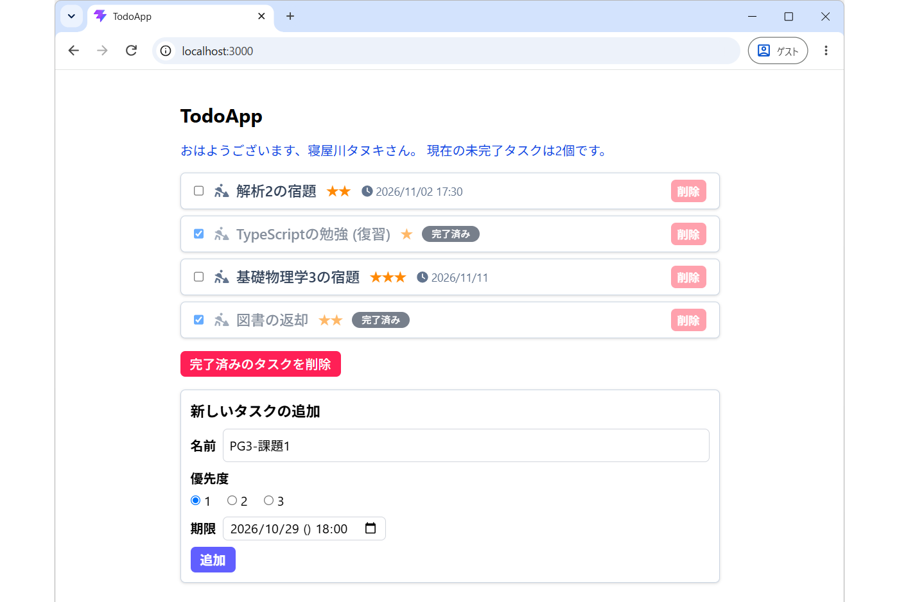
3 前回の「つづき」から取り組むための準備と確認
前回講義の Todoアプリの実装
のセクションでは、Todoオブジェクトの配列 を useState
で管理し、map
を使って一覧を表示するところまで取り組みました。今回の内容は、そこまでの内容を理解したうえで実装できていることを前提とします。
今回は、そこに Todoの「追加」「更新」「削除」の操作 を実装していきます。
まず、足並みを揃えて解説していくために、src/App.tsx が次のような実装になっていることを確認してください。
import { useState } from "react";
import type { Todo } from "./types";
import { initTodos } from "./initTodos";
import WelcomeMessage from "./WelcomeMessage";
import TodoList from "./TodoList";
const App = () => {
const [todos, setTodos] = useState<Todo[]>(initTodos);
const uncompletedCount = todos.filter((todo) => !todo.isDone).length;
return (
<div className="mx-4 mt-10 max-w-2xl md:mx-auto">
<h1 className="mb-4 text-2xl font-bold">TodoApp</h1>
<div className="mb-4">
<WelcomeMessage
name="寝屋川タヌキ"
uncompletedCount={uncompletedCount}
/>
</div>
<TodoList todos={todos} />
</div>
);
};
export default App;- 前回の動作確認で追加した
console.logは、ここでは削除しています。 - WelcomeMessage コンポーネントには、現在の
todosから数えた未完了件数を渡す 点も確認してください。
前回講義の Todoリストのソートに関する処理 (演習)
を実装している場合は、src/TodoList.tsx の const todos = ...;
を、一旦 const todos = props.todos; に戻しておいてください。
また、同様に 宿題 で、src/TodoList.tsx で Todo リストの「デザイン」や「スタイル」をカスタマイズしているときは、一旦、現在のファイルを プロジェクトフォルダの外部にコピーするなどして退避 しておいてください。
前回講義では src/initTodos.ts は 3件分の Todoオブジェクト配列 で構成されていたと思います。これを、initTodos.ts のように 4件分の Todoオブジェクト配列 に差し替えておいてください。
以上について確認できたら、VSCode のターミナルから npm run dev
を実行し、開発モードでアプリを起動してください。以下のような画面となっているはずです。
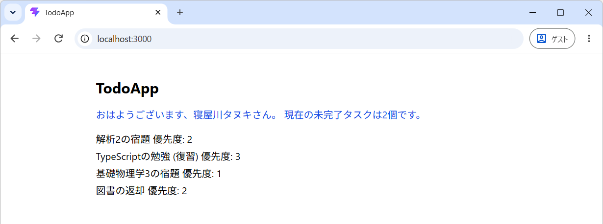
また、念のため npm run build
を実行し、ビルドがエラーなく完了することも確認してください。そのうえで、現在の状態を記録しておくために、一度コミットしておくことをおすすめします。これにより、以降の作業で追加・変更したコードを確認しやすくなります。
上記のスクリーンショットと手元での実行結果に 大きな差異がある場合 は、各ファイルを以下の内容に差し替えてください。
4 新規タスクの追加
現在の Todo リストに「新しいタスクを追加する処理」の本体とUIを実装していきます。具体的には、次のような画面になるように実装していきます。
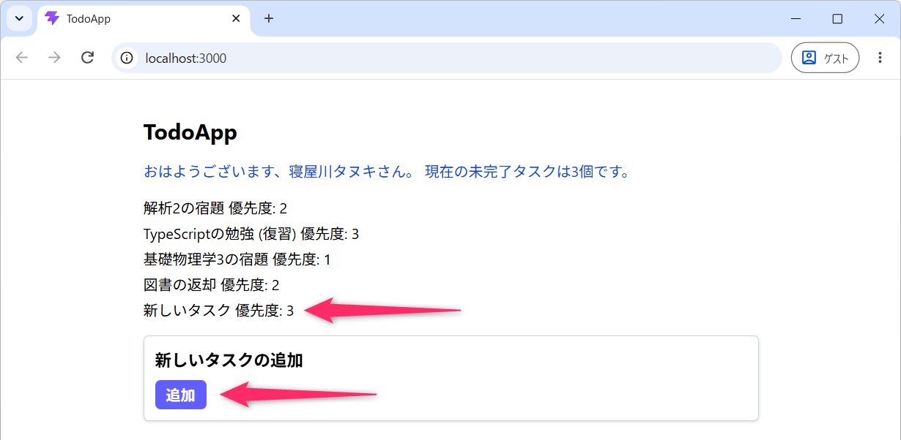
- 完成形を先に確認したい場合は、こちらの実装例を参照してください 👉 src/App.tsx
4.1 追加ボタンとイベントハンドラ
src/App.tsx を次のように書き換えてください。
import { useState } from "react";
import type { Todo } from "./types";
import { initTodos } from "./initTodos";
import WelcomeMessage from "./WelcomeMessage";
import TodoList from "./TodoList";
import { v4 as uuid } from "uuid";
import { twMerge } from "tailwind-merge";
const App = () => {
const [todos, setTodos] = useState<Todo[]>(initTodos);
const uncompletedCount = todos.filter((todo) => !todo.isDone).length;
const addNewTodo = () => {
const newTodo: Todo = {
id: uuid(),
name: "新しいタスク",
isDone: false,
priority: 3,
deadline: new Date(2026, 10, 13),
};
setTodos((currentTodos) => [...currentTodos, newTodo]);
};
return (
<div className="mx-4 mt-10 max-w-2xl md:mx-auto">
<h1 className="mb-4 text-2xl font-bold">TodoApp</h1>
<div className="mb-4">
<WelcomeMessage
name="寝屋川タヌキ"
uncompletedCount={uncompletedCount}
/>
</div>
<TodoList todos={todos} />
<div className="mt-4 space-y-2 rounded-md border border-slate-300 bg-white p-3 drop-shadow">
<h2 id="newTodoHeading" className="text-lg font-bold">
新しいタスクの追加
</h2>
<button
type="button"
onClick={addNewTodo}
className={twMerge(
"cursor-pointer rounded-md px-3 py-1",
"bg-indigo-500 font-bold text-white hover:bg-indigo-600",
)}
>
追加
</button>
</div>
</div>
);
};
export default App;- 第06行目の
uuidと 第07行目 のtwMergeは、前回講義でインストールしたライブラリ からインポートしています。
src/App.tsx に追加したコードは、VSCode の Git の 差分表示機能 を利用して確認してみてください。変更前後のコードを比較できるため、追加箇所を把握しやすくなります。
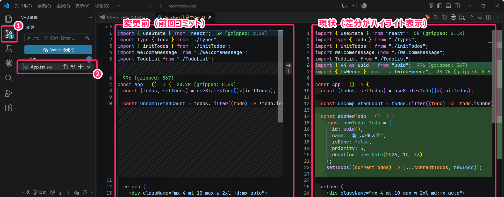
まずは開発モードでアプリを動かし、動作を確認してください (「追加」ボタンを押下すると、リストの末尾に「新しいタスク」が追加され、未完了件数も増えることを確認してください)。
追加 ボタンに設定された onClick={addNewTodo}
により、ボタンがクリックされると、第14行目 でアロー関数として定義された
addNewTodo
関数が呼び出されます。このように、クリックなどのイベントが発生したときに実行される関数
を イベントハンドラ といいます。
onClick に渡すのは 関数そのもの
です。onClick={addNewTodo()}
と記述すると、クリックされるのを待たずに、コンポーネントのレンダリング時に関数が実行され、その戻り値が
onClick に渡されてしまいます。この違いは React
を扱ううえで非常に重要なので、曖昧にせず、正確に理解しておいてください。
- TypeScript 環境の React で Todo アプリを開発しています。ボタンを押したときに、引数なしの
addNewTodo 関数を実行したいです。なぜ
onClick={addNewTodo}と書き、onClick={addNewTodo()}とは書かないのですか。関数を渡すことと、関数を実行することの違いが分かりません。
4.2 「前の状態」から「次の状態」をつくる
第14行目 からの 関数 addNewTodo では、最初に
newTodo を生成しています。
id は uuid() で生成し、「未完了」「優先度 3」「2026 年 11 月 13
日を期限」としています。
new Date(2026, 10, 13)の「月」が10なのは、Date の月は「0」から数える ためでした。
つづいて、第22行目 では、setTodos
関数を使って、Todoリストの「状態」を更新しています。
setTodos に渡している
(currentTodos) => [...currentTodos, newTodo] を updater 関数
といいます。引数名は currentTodos
でなければならないわけではありません。例えば、setTodos((t) => [...t, newTodo]);
でも問題ありませんが、この講義では、更新前の配列を表す名前として currentTodos
を使っていきます。
前回講義の カウンタの実装 では、カウントアップの際に
setCount(count + 1) のように、次の値そのもの
を更新用の関数に渡しました。今回は、前の状態を受け取り、次の状態を返す関数 を渡しています。
currentTodosには、React がこの更新を処理する時点の配列が渡されます。[...currentTodos, newTodo]で、末尾にnewTodoを加えた 新しい配列 をつくって返します。- 返した配列が、次の
todosになります。
中級者向け
第22行目 の追加処理は、setTodos([...todos, newTodo])
と記述することもできます。しかし、ここでは追加・完了切り替え・削除のいずれについても、updater
関数を利用して、前の状態から次の状態をイミュータブルに生成する方法に統一しています。
updater
関数のなかでは、元の配列を変更（ミューテート）せず、新しい配列を返すようにしてください。また、React
の updater 関数には純粋関数であることが求められるため、uuid()
による ID の生成も updater 関数の外で行ってください。
例えば、以下のように updater 関数の内部で uuid()
を呼び出す実装は不適切です。
const addNewTodo = () => {
setTodos((currentTodos) => [
...currentTodos,
{
id: uuid(),
name: "新しいタスク",
isDone: false,
priority: 3,
deadline: new Date(2026, 10, 13),
},
]);
};この実装では、同じ currentTodos を受け取っても、呼び出すたびに異なる ID
が生成されます。つまり、同じ引数に対して同じ結果を返すという、純粋関数の性質を満たしていません。React
の開発環境 (Strict Mode) では updater
関数が2回呼び出される場合もあるため、このような処理は避けてください。
追加されたコードをじっくりと読み解き、それぞれの処理がアプリの動作にどのように紐付いているのかを確認・検証してみてください。
- ここまでの実装例 👉 src/App.tsx
4.2.1 演習 3分
- 新規タスクを、配列の「末尾」ではなく「先頭」に追加するように変更してください。
- 答え:
setTodos((currentTodos) => [newTodo, ...currentTodos]);
- 答え:
画面上の追加位置が変わることを確認したら、末尾に追加する実装に戻しておいてください。
4.3 NG: Todos 配列に対するミュータブルな操作
Todoリストの更新を push メソッドなどを使った ミュータブルな配列操作
によって行なうと、どのような問題が生じるのかを実験しておきます。addNewTodo
関数だけ を、一時的に次のように書き換えてみてください。
const addNewTodo = () => {
const newTodo: Todo = {
id: uuid(),
name: "新しいタスク",
isDone: false,
priority: 3,
deadline: new Date(2026, 10, 13),
};
todos.push(newTodo);
setTodos(todos);
console.log(JSON.stringify(todos, null, 2));
};この状態で「追加」ボタンを押してみてください。
デベロッパーツールのコンソールには、意図したように「新しいタスク」が追加された配列が出力されます。しかし、それにもかかわらず、画面上の Todo リストには「新しいタスク」の追加が反映されないという状態となってしまいます。
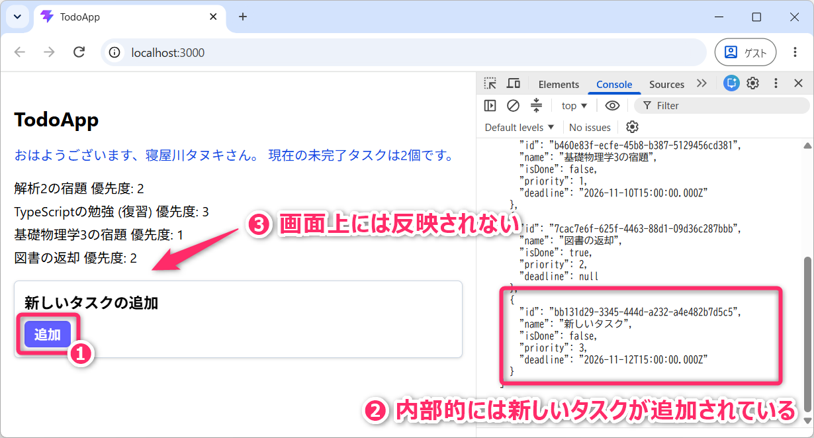
なぜ、このようなことが生じるかは、前回、前々回の講義で解説済みですが非常に重要なことなので、改めて確認しておきます。
配列の push メソッドは、元の配列そのものを書き換える処理となります
(ミュータブルなオブジェクト操作です) 。そのため、setTodos(todos)
を実行しても、更新前と同じ配列（同じ参照）を渡していることになり、React
は「状態が変化していない」と判断して、再レンダリング
(画面の再描画) を省略します。React
は、配列の中身までひとつひとつ調べて変更を検出しているわけではありません。
そのため、配列の内容が実際には変わっていても、画面には反映されないという問題が生じます。これが、React の状態をイミュータブルに更新する必要がある理由のひとつです。
実験後は、push と実験用の console.log
を削除し、スプレッド構文を使った updater
関数による元の実装に戻してください。また、実験中に直接書き換えた配列を初期状態に戻すため、ブラウザも一度リロードしてください。
ここまでの変更内容をコミットしておいてください。また、念のため npm run build
を実行し、ビルドがエラーなく完了することも確認してください。
4.3.1 定着確認
- React で、ボタンがクリックされたタイミングで
addNewTodo関数を実行したい。onClick={addNewTodo}とonClick={addNewTodo()}のどちらが適切か。また、その理由を説明せよ。- 答え:
onClick={addNewTodo}。関数そのものを渡すことで、クリック時に実行される。onClick={addNewTodo()}では、レンダリング時に関数が実行されてしまう。
- 答え:
- React で、
useStateで管理している配列todosに対してtodos.push(newTodo); setTodos(todos);と記述すると、配列に新しい Todo が追加されても、画面に反映されないことがある。その理由を説明せよ。- 答え:
pushは元の配列を直接変更するため、setTodosに渡す配列の参照が更新前と変わらない。React は状態が変化していないと判断し、再レンダリングを省略するため。
- 答え:
5 新規タスクの名前設定テキストボックスの追加
次に新規タスクの「名前」を設定するための「テキストボックス」を追加していきます。useState
を用いてテキストボックスに入力された文字列を「状態」として扱います。
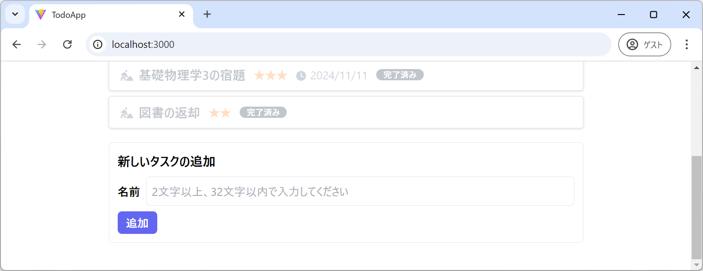
- 完成形を先に確認したい場合は、こちらの実装例を参照してください 👉 src/App.tsx
5.1 入力文字列を「状態」として扱う
まずは、テキストボックスに入力された文字列を、React の「状態」として管理できるようにしていきます。入力内容を「状態」として保持することで、後々で、未入力のチェックなどのバリデーションにも活用できるようになります。
src/App.tsx の App 関数内で、todos
の状態の直後に次の行を追加してください。
初期値は空文字 "" です。ここでは初期値から string
と型推論されるため、useState<string>("")
のような型指定を省略しています。
また、ファイルの先頭に型のインポートを追加してください。
ChangeEvent
は、入力欄の変更イベントを扱うための「型」です。型だけのインポートなので
import type を使います。
次の updateNewTodoName 関数を、App 関数内の
addNewTodo より前に追加してください。
const updateNewTodoName = (e: ChangeEvent<HTMLInputElement>) => {
setNewTodoName(e.target.value);
};この updateNewTodoName
関数は、ユーザーが入力欄に文字を入力するたびに、その文字列を取得して
newTodoName の状態を更新する処理を担当します。つまり、入力欄の内容と
React の状態を連動させるための関数となります。
e には、イベントに関する情報が渡されます。
ChangeEvent<HTMLInputElement> の型注釈は、HTML の input
要素に対する変更イベント を受け取ることを表しています。e.target.value
で、入力欄の現在の文字列を取得することができます。
5.2 入力欄と「状態」を対応付ける
JSX の <h2 ...>新しいタスクの追加</h2> と
<button ...>追加</button>
の間に、次のコードを挿入してください。これにより「newTodoName」と「テキストボックスの入力値」が紐付けられ、互いに連動する仕組みが完成します。
具体的には、プログラムから newTodoName
を更新するとテキストボックスの表示も変わり、逆にユーザーがテキストボックスに入力すると、その内容が
newTodoName に反映されるようになります。
<div className="flex items-center space-x-2">
<label className="font-bold" htmlFor="newTodoName">
名前
</label>
<input
id="newTodoName"
name="todoName"
type="text"
value={newTodoName}
onChange={updateNewTodoName}
className="min-w-0 grow rounded-md border border-gray-300 p-2"
placeholder="タスクの名前を入力してください"
/>
</div>ここでは、値が反映される「方向」を区別して理解するようにしてください。
value={newTodoName}は、状態 → 入力欄 の反映です。onChange={updateNewTodoName}は、入力操作 → 状態の更新 を担当します。
React の状態を値の基準にして、このように入力を扱うものを Controlled Input
(制御コンポーネント、制御された入力) といいます。value
属性だけを指定しても、ユーザの編集結果は状態に反映されません。必ず onChange
属性と組み合わせてください。
React の文脈で Controlled Input とはなんですか。
JSX (HTML) の
inputの属性id、name、type、value、onChange、className、placeholderについて解説してください。
また、label の htmlFor="newTodoName" と input の
id="newTodoName"
が対応しています。「名前」というラベルをクリックすると、入力欄がアクティブになることも確認してください。
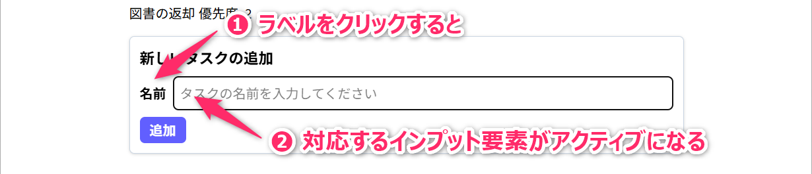
5.3 入力した名前で追加する
ここまでで、テキストボックスに入力した文字列が、状態 newTodoName
に反映されるようになりました。つづいて、この状態に保持された文字列を新しい Todo
の名前として使用し、Todo リストに追加できるように処理を変更していきます。
src/App.tsx の addNewTodo
関数を、次のように書き換えてください。
const addNewTodo = () => {
const newTodo: Todo = {
id: uuid(),
name: newTodoName,
isDone: false,
priority: 3,
deadline: new Date(2026, 10, 13),
};
setTodos((currentTodos) => [...currentTodos, newTodo]);
setNewTodoName("");
};まずは、テキストボックスに「React の復習」などの名前を入力してから「追加」ボタンを押してみてください。入力した名前の Todo がリストの末尾に追加され、テキストボックスが空になること を確認してください。
第23行目 では、新しく生成する newTodo の name
に、状態 newTodoName
の値を設定しています。これにより、これまで「新しいタスク」という固定の名前で追加していた Todo
を、入力した名前で追加できるようになります。また、第29行目 の
setNewTodoName("") は、Todo を追加したあとに、状態 newTodoName
を空文字に戻す処理になっています。
状態を空文字に戻すと、value={newTodoName}
を通して、その値がテキストボックスにも反映されます。前節で説明した 「状態 →
入力欄」 の反映が、ここでも機能していることを確認してください。
なお、この段階では、名前を入力せずに「追加」ボタンを押すと 名前が空の Todo も追加できて しまいます。この問題については、あとの バリデーション で対応していきます。
- ここまでの実装例 👉 src/App.tsx
React + TypeScript で
const [newTodoName, setNewTodoName] = useState("");とし、input にvalue={newTodoName}とonChange={updateNewTodoName}を設定しています。updateNewTodoName 関数ではsetNewTodoName(e.target.value)を呼び出しています。文字を入力したときに、入力欄と状態がどのように連動するのか説明してください。また、Todo の追加後にsetNewTodoName("")を呼び出すと、なぜ入力欄も空になるのですか。TypeScript で、
App関数内で定義したaddNewTodo関数から、外側のApp関数の変数newTodoNameを参照することができました。内側の関数は、外側の関数で定義された変数に制限なくアクセスできるのでしょうか。また、このような変数へのアクセスは、カプセル化の原則に反しないのでしょうか。
ここまでの変更内容をコミットしておいてください。また、念のため npm run build
を実行し、ビルドがエラーなく完了することも確認してください。
5.3.1 演習 3分
入力欄の幅と className の関係も確認しておいてください。名前の入力欄の
className から grow
だけを取り除き、入力欄の幅がどのように変化するか確認してください。確認後は元に戻しておいてください。
- Tailwind CSS における「grow」というユーティリティクラスについて解説してください。特にテキストボックスに適用したときの挙動や注意点について知りたいです。
5.3.2 定着確認
- React で入力文字列を
useStateで管理するとき、input に設定するvalueとonChangeは、それぞれ何を担当するか答えよ。- 答え:
valueには入力欄に反映する状態の値を設定する。onChangeには、ユーザーの入力を受けて状態を更新するイベントハンドラを設定する。
- 答え:
- React の input と label を対応付ける場合、input の
idと同じ値を設定する label の属性を答えよ。- 答え:
htmlFor。
- 答え:
- React + TypeScript で
const [newTodoName, setNewTodoName] = useState("");と記述したとき、newTodoNameの型と初期値を答えよ。- 答え: 型は
string、初期値は空文字""。
- 答え: 型は
6 優先度を設定するラジオボタンの追加
新規タスクの優先度を「1」「2」「3」から選んで設定する「ラジオボタン」を追加します。名前入力と同様に、優先度についても「状態」として扱います。
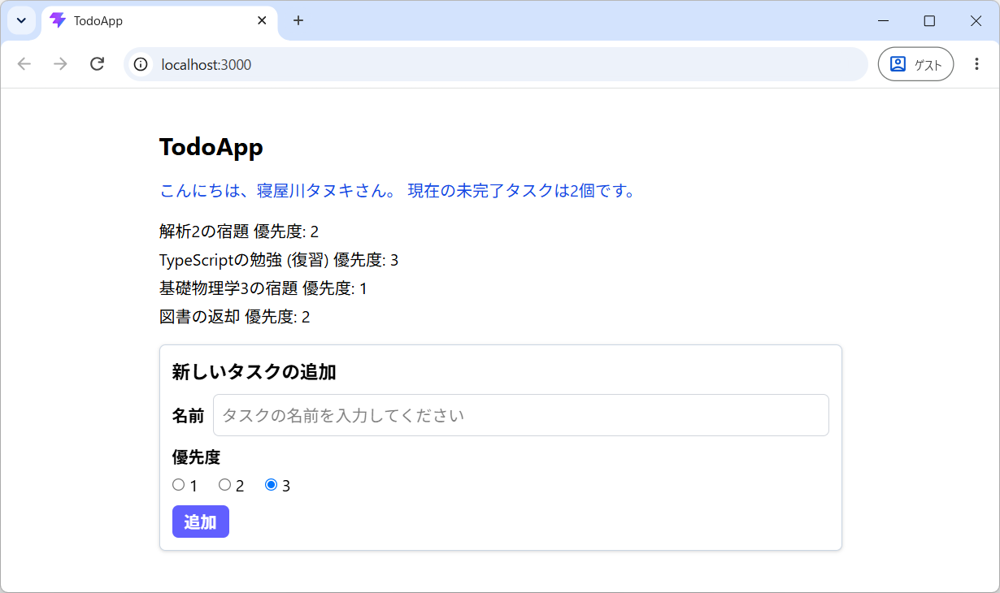
- 完成形を先に確認したい場合は、こちらの実装例を参照してください 👉 src/App.tsx
src/App.tsx の newTodoName
の状態の直後に、次の行を追加してください。初期値は 3 です。
つづいて、App 関数内の addNewTodo
より前に、次の関数を追加してください。
const updateNewTodoPriority = (e: ChangeEvent<HTMLInputElement>) => {
setNewTodoPriority(Number(e.target.value));
};e.target.value は、type="radio" の入力欄でも 文字列 となります。newTodoPriority
は数値の状態なので、上記のように Number で変換してからセットしています。
文字列である e.target.value を、そのまま setNewTodoPriority
に与えようとすると型エラーになることを確認してください。
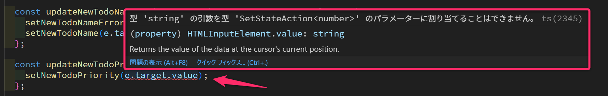
確認後は Number を使うコードに戻しておいてください。
6.1 map でラジオボタンを構成する
JSX の名前入力欄と「追加」ボタンの間に、次のコードを挿入してください。
<fieldset>
<legend className="mb-1 font-bold">優先度</legend>
<div className="flex gap-5">
{[1, 2, 3].map((value) => (
<label key={value} className="flex items-center space-x-1">
<input
id={`priority-${value}`}
name="priorityGroup"
type="radio"
value={value}
checked={newTodoPriority === value}
onChange={updateNewTodoPriority}
/>
<span>{value}</span>
</label>
))}
</div>
</fieldset>このコードでは、次の対応を確認してください。
[1, 2, 3].map(...)で 3 個のラジオボタンをつくっています。mapが返す一番外側のlabelには、前回と同じように key 属性 を設定しています。type="radio"がラジオボタンを表します。同じname="priorityGroup"のボタンを、1 つのグループとして扱います。checked={newTodoPriority === value}は、どのボタンを選択状態にするかを指定します。数値として比較している点も確認してください。onChangeで呼び出されるupdateNewTodoPriorityが状態を更新します。
key について
前回講義で 解説
したように JSX 構文のなかで map を利用するときは map
の戻り値となる最外殻の要素には「key属性」 を設定する必要がありました。そのため
第73行目 に「key属性」を設定しています。
key属性を設定しないとブラウザのコンソールに「Warning: Each child in a list should have a unique “key” prop.」のような警告が表示されます。
最後に、関数 addNewTodo において、以下のように priority を
newTodoPriority に変更し、追加後に setNewTodoPriority(3)
を実行するようにしてください。
const addNewTodo = () => {
const newTodo: Todo = {
id: uuid(),
name: newTodoName,
isDone: false,
priority: newTodoPriority, // 変更
deadline: new Date(2026, 10, 13),
};
setTodos((currentTodos) => [...currentTodos, newTodo]);
setNewTodoName("");
setNewTodoPriority(3); // 変更
};- ここまでの実装例 👉 src/App.tsx
ここまでの変更内容をコミットしておいてください。また、念のため npm run build
を実行し、ビルドがエラーなく完了することも確認してください。
6.2 補足: onChange 属性の設定
updateNewTodoPriority を別の関数として定義せず、次のように
onChange にアロー関数を直接記述することもできます。
この場合は、e
の型が推論されるため、型注釈を省略できます。短いイベント処理では、このような書き方もよく使います。このあとのチェックボックスの実装でも使っていきます。
6.3 演習: 表示する文字と値を分ける 5分
優先度の内部値は 1・2・3
のままにして、ラベルだけを「高」「中」「低」に変えてください。
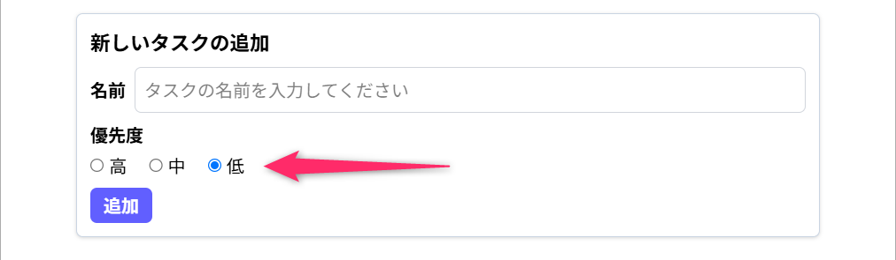
- ヒント:
[1, 2, 3]を["高", "中", "低"]に変更し、map((label, index) => ...)とする。内部値にはindex + 1を使う。 - 変更する対応:
key={label}、id={`priority-${index + 1}`}、value={index + 1}、checked={newTodoPriority === index + 1}、表示は<span>{label}</span>。
ラベルを変えても、updateNewTodoPriority
は変更せずに使えることを確認してください。確認後は、ラベルも
1・2・3 に戻しておいてください。
6.3.1 定着確認
- React のラジオボタンから
e.target.valueで値を取得した場合、その型を答えよ。- 答え: 文字列型。数値として扱うなら
Numberなどで変換する。
- 答え: 文字列型。数値として扱うなら
- ラジオボタンの選択状態を React の状態と対応付ける属性を答えよ。
- 答え:
checked。
- 答え:
- HTML のラジオボタンを同じグループとして扱うため、共通の値を指定する属性を答えよ。
- 答え:
name。
- 答え:
7 期限を設定する日時設定UIの追加
新規タスクの期限を設定する「日時入力欄」を追加します。ここでは、日付と時刻をまとめて選ぶ
type="datetime-local" を使います。
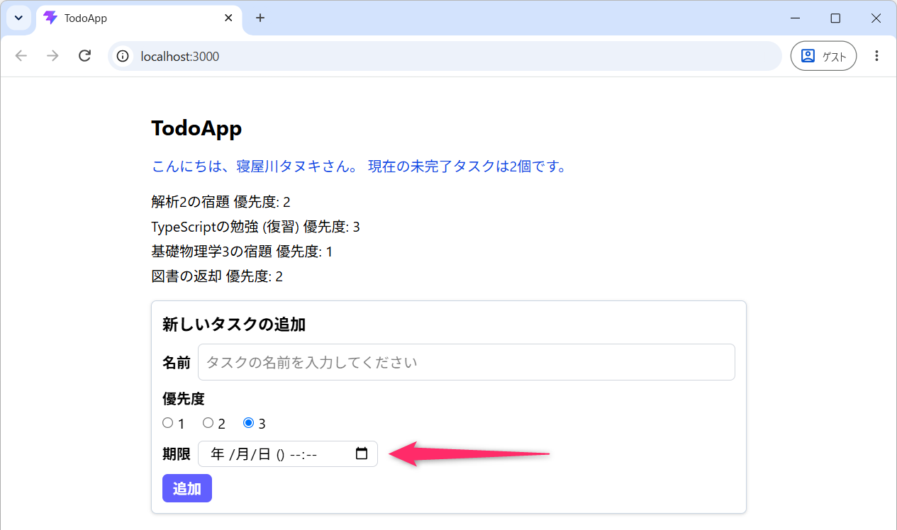
完成形を先に確認したい場合は、こちらの実装例を参照してください 👉 src/App.tsx
なお、type="datetime-local" を指定した input
要素の外観（GUI）は、ブラウザによって異なります。本講義資料では、Google Chrome
での表示をスクリーンショットとして掲載しています。
7.1 期限の状態を用意する
前回定義した Todo 型では、期限の型を Date | null
としています。期限を設定しない Todo は null
という扱いを、引き続き使っていきます。
src/App.tsx の newTodoPriority
の状態の直後に、次の行を追加してください。
初期値は null ですが、あとで Date もセットするため、ここでは
useState<Date | null> のように 型を明示 しています。
useState(null) だけでは、Date
を入れる状態として推論されません。
Date | null のように、複数の型のいずれかを表す型を ユニオン型（Union 型） といいました。
7.2 日時情報の更新（UI → コード）
App 関数内の addNewTodo より前に、次の
updateDeadline 関数を追加してください。
const updateDeadline = (e: ChangeEvent<HTMLInputElement>) => {
const dt = e.target.value;
setNewTodoDeadline(dt === "" ? null : new Date(dt));
};日時入力欄で選択した値も、e.target.value からは 文字列
として得られます。日付と時刻がそろっているときは、"2026-11-12T23:00"
のような文字列です。空欄のときは "" になります。
そのため、条件演算子で「空文字なら null、そうでなければ
new Date(dt) で Date オブジェクトに変換」としています。第02回講義で学んだ 三項演算子 の利用例です。
値の変化を確認したいときは、一時的に const dt = e.target.value; の次に
console.log(dt, typeof dt);
を入れて実験してください。表示されている日時と、コードが受け取る文字列の形式は異なること
が確認できます。確認後、ログ出力は削除しておいてください。
期限を 削除したいとき (空欄に戻したいとき) は、以下のように「削除」を押下してください。
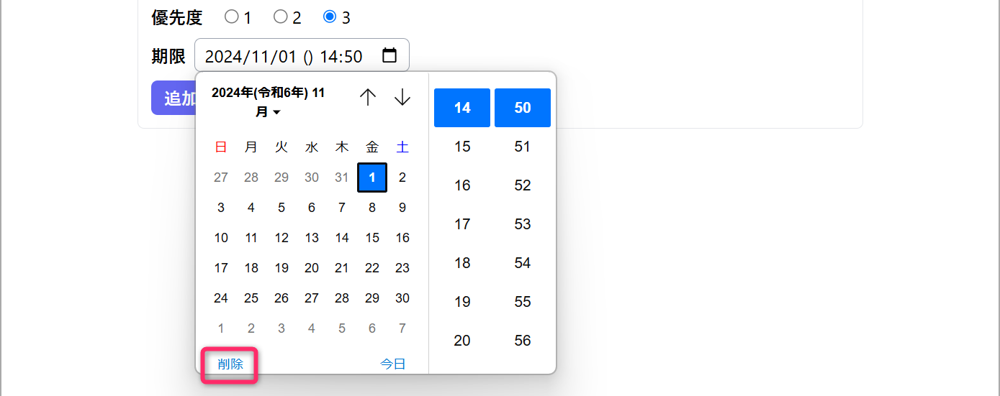
7.3 日時情報の更新（コード → UI）
ファイルの先頭に import dayjs from "dayjs"; を追加し、JSX
の優先度の選択欄と「追加」ボタンの間に、次のコードを挿入してください。
<div className="flex flex-wrap items-center gap-2">
<label className="font-bold" htmlFor="deadline">
期限
</label>
<input
type="datetime-local"
id="deadline"
name="deadline"
value={
newTodoDeadline
? dayjs(newTodoDeadline).format("YYYY-MM-DDTHH:mm:ss")
: ""
}
onChange={updateDeadline}
className="max-w-full min-w-0 rounded-md border border-gray-300 px-2 py-0.5"
/>
</div>入力欄の value には、Date
オブジェクトそのものではなく「入力欄が扱う形式の文字列」を渡す必要があります。
ここでは、前回インストールした Day.js
のライブラリを使い、YYYY-MM-DDTHH:mm:ss の形式に変換しています。T
は日付と時刻を区切る文字です。newTodoDeadline が null
なら、空文字を渡します。
この入力欄で扱うのは、利用している環境のローカルな日時 です。ここで
toISOString() を使うと UTC
の文字列になるため、そのまま入力欄の値に使わないようにしてください。
最後に、関数 addNewTodo において、以下のように newTodo の
deadline を newTodoDeadline に変更し、追加後に
setNewTodoDeadline(null) を実行するようにしてください。
const addNewTodo = () => {
const newTodo: Todo = {
id: uuid(),
name: newTodoName,
isDone: false,
priority: newTodoPriority,
deadline: newTodoDeadline, // 変更
};
setTodos((currentTodos) => [...currentTodos, newTodo]);
setNewTodoName("");
setNewTodoPriority(3);
setNewTodoDeadline(null); // 追加
};- ここまでの実装例 👉 src/App.tsx
ここまでの変更内容をコミットしておいてください。また、念のため npm run build
を実行し、ビルドがエラーなく完了することも確認してください。
7.3.1 演習
次の 3 点について、画面とコンソール出力で確認してください。日時を設定した Todo と、期限なしの Todo の両方を追加してみてください。
- 期限を入力して追加すると、Todo の
deadlineが Date オブジェクトになる。 - 期限を空欄にして追加すると、
deadlineはnullになる。 - 追加後は日時入力欄も、空欄に戻る。
確認用として、addNewTodo 関数で newTodo
を生成した直後（setTodos を呼び出す前）に、次の行を一時的に追加してください。
newTodo.deadline instanceof Dateは、newTodo.deadline が Date オブジェクトかどうかを判定する処理になります。期限を設定した場合は日時とtrue、期限なしの場合はnullとfalseが出力されることを確認してください。確認後は、このログ出力を削除しておいてください。
7.3.2 定着確認
- Todo の期限を表す
Date | nullのnullは、この Todoアプリでは何を意味するか答えよ。- 答え: 期限を設定しないこと。
- 初期値が
nullで、あとで Date オブジェクトもセットする React の状態を宣言する場合、useStateに指定する型を答えよ。- 答え:
useState<Date | null>(null)。
- 答え:
- 日時入力欄から受け取った文字列が
""の場合と"2026-11-12T23:00"の場合、それぞれこのアプリの期限の状態に何をセットするか答えよ。- 答え: 空文字なら
null、日時の文字列ならnew Date(dt)で生成した Date オブジェクト。
- 答え: 空文字なら
8 バリデーション
これまでの実装では、名前 (タスク名) が空の Todo も追加できてしまう状態でした。そこで、名前の前後の空白を除いた文字数が 2 文字以上、32 文字以内であることを追加の条件とし、この条件を満たす場合にのみ Todo を追加できる ようにします。
このように、入力されたデータが条件を満たすかチェックする処理を バリデーション（Validation） といいます。このセクションでは、名前を検証する関数を用意し、条件を満たさない場合にエラーメッセージを表示する処理 を実装します。さらに、条件を満たさない場合は、追加ボタンも無効化して、以下のような画面にしていきます。
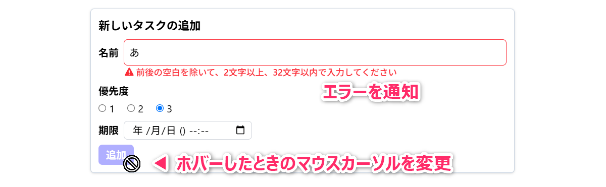
- 完成形を先に確認したい場合は、こちらの実装例を参照してください 👉 src/App.tsx
- 次のセクション フォームの送信と追加ボタンの無効化 の変更も含みます。
8.1 検証する関数を用意する
src/App.tsx のインポートと App 関数の間に、次の
getTodoNameError 関数を追加してください。
const getTodoNameError = (name: string): string => {
const trimmedName = name.trim();
if (trimmedName.length < 2 || trimmedName.length > 32) {
return "前後の空白を除いて、2文字以上、32文字以内で入力してください";
}
return "";
};第14行目 の trim() は、文字列の前後の空白を取り除いた
新しい文字列 を返すメソッドです。例えば、" 買い物 "
に対して実行すると "買い物" になります。元の name
は変更せず、文字列の途中にある空白も取り除きません。
第15行目
では、前後の空白を取り除いた名前の長さを調べています。|| は「または」なので、2
文字未満、または 32
文字を超える場合に、エラーメッセージを返します。空白だけの名前も、trim()
によって空文字になるため、この条件に該当します。
一方、条件を満たす名前であれば、第18行目 で空文字 ""
を返します。つまり、この関数の戻り値は 不備がある場合はエラーメッセージ、不備がない場合は空文字
となります。
この関数は、React の状態を直接参照せず、引数 name
だけを使って検証します。そのため、App 関数の外に定義しています。
8.2 検証結果は入力から計算する
まだ名前を入力していないのに、画面を開いた瞬間からエラーメッセージが表示されるのは、UI/UX として適切な設計ではありません。そこで、名前を一度でも入力・編集したあとに、入力内容が条件を満たしていなければエラーメッセージを表示する ようにしていきます。
まず、App
関数内で、状態を宣言している箇所の最後に次の行を追加してください。
isNameTouched
は、「名前を入力・編集したことがあるか」を表す「状態」です。初期値は false
とし、名前の入力欄を編集したときに true に変更します。
つづいて、未完了件数を計算する行のあとに、次の 3 行を追加してください。
const newTodoNameError = getTodoNameError(newTodoName);
const isNewTodoNameInvalid = newTodoNameError !== "";
const showNewTodoNameError = isNameTouched && isNewTodoNameInvalid;- 第29行目 の
newTodoNameErrorには、現在の名前を検証した結果（エラーメッセージ、または空文字）が入ります。 - 第30行目 の
isNewTodoNameInvalidは、エラーメッセージが空文字でない、つまり、名前が条件を満たしていないときにtrueになります。 - 第31行目 の
showNewTodoNameErrorは、&&（かつ）によって、名前を編集済みで、かつ、条件を満たしていないとき にtrueになります。
例えば、画面を開いた直後は名前が空なので、isNewTodoNameInvalid は
true です。しかし、isNameTouched は false
なので、showNewTodoNameError は false
になります。「名前に不備があるか」と「エラーを表示するか」は、別々に判断している
ことを確認してください。
newTodoNameError などを、別の useState
で管理する必要はありません。App
関数が再実行されるたびに、現在の名前と編集済みの状態から計算できます。前回、未完了件数を
todos から計算したのと同じ考え方です。
つづいて、updateNewTodoName
を次のように書き換えてください。これまでの名前の更新に加えて、第35行目
で編集済みの状態を true に変更します。
const updateNewTodoName = (e: ChangeEvent<HTMLInputElement>) => {
setNewTodoName(e.target.value);
setIsNameTouched(true);
};これにより、一度入力した文字をすべて消して空欄に戻した場合も、isNameTouched は
true
のままになります。最初から空欄だった場合とは、エラーの表示を分けられるわけです。
8.3 不備があるときにメッセージを表示する
次に、入力欄の下にエラーメッセージを表示するようにします。まず、src/App.tsx の先頭のインポートに、次の 2 行を追加してください。警告アイコンに使うライブラリは、前回インストール済みです。
import { FontAwesomeIcon } from "@fortawesome/react-fontawesome";
import { faTriangleExclamation } from "@fortawesome/free-solid-svg-icons";つづいて、名前の label と input を囲んでいる
<div className="flex items-center space-x-2">
全体を、次のコードに書き換えてください。入力欄とメッセージをまとめる外側の
div も含めて記述してください。
<div>
<div className="flex items-center space-x-2">
<label className="font-bold" htmlFor="newTodoName">
名前
</label>
<input
id="newTodoName"
name="todoName"
type="text"
required
value={newTodoName}
onChange={updateNewTodoName}
aria-invalid={showNewTodoNameError}
aria-describedby={
showNewTodoNameError ? "newTodoNameError" : undefined
}
className={twMerge(
"min-w-0 grow rounded-md border border-gray-300 p-2",
showNewTodoNameError && "border-red-500 outline-red-500",
)}
placeholder="2文字以上、32文字以内で入力してください"
/>
</div>
{showNewTodoNameError && (
<div
id="newTodoNameError"
aria-live="polite"
className="ml-10 flex items-center space-x-1 text-sm font-medium text-red-500"
>
<FontAwesomeIcon
icon={faTriangleExclamation}
className="mr-0.5"
/>
<div>{newTodoNameError}</div>
</div>
)}
</div>第113行目 の {showNewTodoNameError && (...)}
は、showNewTodoNameError が true のときだけ、後ろの JSX
を表示する記述です。このように、条件によって表示する内容を切り替えることを 条件付きレンダリング といいます。ここでは、警告アイコンと
newTodoNameError の文字列を表示しています。
また、第108行目
では、同じ条件を使って入力欄の枠線も赤色にしています。twMerge は Tailwind CSS
のクラスを結合する関数となります。通常時の border-gray-300 と、エラー表示時の
border-red-500 が衝突しないようにしています。
名前の入力欄に a
と入力し、エラーメッセージと赤い枠線が表示されることを確認してください。
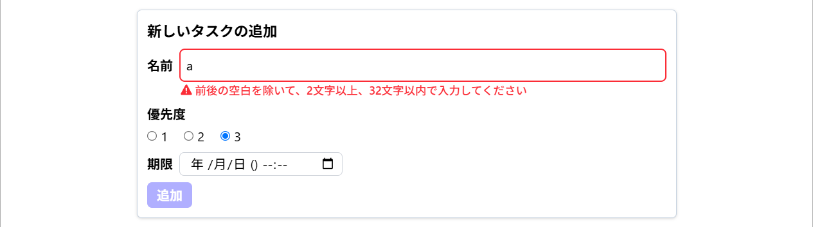
つづけて b を入力して ab
にすると、エラーメッセージが消え、枠線の色が戻ることも確認してください。
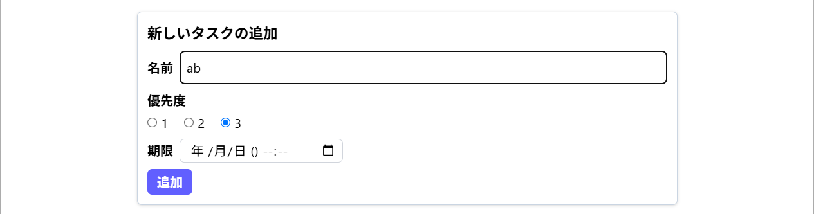
なお、aria-invalid や aria-describedby、aria-live
は、不備の有無や説明との対応、表示の変化を読み上げなどに伝えるための指定です。
tailwind-merge ライブラリの twMerge の使い方を解説してください。また、これを使うことのメリットについて教えてください。
JSX (HTML) の
divの属性aria-invalid、aria-describedby、aria-liveについて解説してください。
8.4 不適切な名前を追加させない
エラーメッセージが表示されるようになりましたが、このままでは「追加」ボタンを押すと、不適切な名前でも
Todo が追加されてしまいます。最後に、addNewTodo
を次のように書き換えてください。
const addNewTodo = () => {
if (isNewTodoNameInvalid) {
setIsNameTouched(true);
return;
}
const newTodo: Todo = {
id: uuid(),
name: newTodoName.trim(),
isDone: false,
priority: newTodoPriority,
deadline: newTodoDeadline,
};
setTodos((currentTodos) => [...currentTodos, newTodo]);
setNewTodoName("");
setNewTodoPriority(3);
setNewTodoDeadline(null);
setIsNameTouched(false);
};第48〜51行目
では、名前が条件を満たしていない場合に、isNameTouched を true
にしてから return しています。これにより、エラーを表示する状態にし、Todo
を生成・追加する処理に進まずに関数を終了します。
また、第55行目 では、newTodoName.trim() を Todo
の名前に設定しています。例えば、入力欄に " 買い物 " と入力して追加すると、Todo
の名前は "買い物" になります。
入力のたびに trim()
すると、名前の途中に空白を入れたい場合も、いったん末尾に入力した空白が消えてしまいます。そのため、入力欄には入力した文字列を保持し、検証時と
Todo の生成時に trim() する ようにしています。
第64行目 では、追加後に isNameTouched も false
に戻しています。名前を空文字に戻しても、次の入力を始める前からエラーメッセージが出ることを防いでいます。
名前が空欄の場合や 1 文字の場合は追加されず、" 買い物 "
なら前後の空白を除いて追加されることを確認してください。また、追加後に入力欄が空になり、エラーメッセージも消えることを確認してください。
ここまでの変更内容をコミットしておいてください。また、念のため npm run build
を実行し、ビルドがエラーなく完了することも確認してください。
9 フォームの送信と追加ボタンの無効化
前節では、名前に不備がある場合に、addNewTodo
の途中で処理を終了するようにしました。この節では、さらに
名前が条件を満たさない間は「追加」ボタンを操作できない
ようにします。また、ボタンのクリックだけでなく、名前の入力欄で Enter
キーを押しても追加できる ようにしていきます。
- 完成形を先に確認したい場合は、こちらの実装例を参照してください 👉 src/App.tsx
9.1 form 要素で送信を扱う
まず、「新しいタスクの追加」の領域を form 要素
に変更します。form
は、入力欄やボタンをひとまとまりにして、送信を扱うための要素です。
src/App.tsx で、追加領域を囲んでいる
<div className="mt-4 ...">
の開始タグを、次のコードに書き換えてください。また、「追加」ボタンの直後にある、この領域を閉じる
</div> を </form>
に変更してください。内部の見出し・入力欄はそのまま残します。
<form
onSubmit={(e) => {
e.preventDefault();
addNewTodo();
}}
aria-labelledby="newTodoHeading"
className="mt-4 space-y-2 rounded-md border border-slate-300 bg-white p-3 drop-shadow"
>第79行目 の onSubmit
に設定した関数は、フォームが送信されるときに実行されます。これまではボタンの
onClick で呼び出していた addNewTodo を、第81行目
のように、この関数のなかで呼び出すようにしています。
ここで、第80行目 の e.preventDefault()
に注目してください。これは、ブラウザ標準のフォーム送信によるページ遷移・リロードを止める処理です。このアプリでは、これまでと同じように
React の状態を更新して Todo を追加するため、標準の送信動作を止めてから addNewTodo
を呼び出しています。
- React において、
input要素をform要素の内部に配置することには、どのようなメリットがありますか。form要素で囲まなくても、各input要素は問題なく機能しますし、入力値の取得や状態管理もできています。それでもform要素を使用する理由は何でしょうか。
9.2 追加ボタンを無効化する
つづいて、「追加」ボタン全体を次のコードに書き換えてください。type="button" を
type="submit" に変更し、以前の onClick={addNewTodo}
は削除します。
<button
type="submit"
disabled={isNewTodoNameInvalid}
className={twMerge(
"cursor-pointer rounded-md px-3 py-1",
"bg-indigo-500 font-bold text-white hover:bg-indigo-600",
"disabled:cursor-not-allowed disabled:opacity-50 disabled:hover:bg-indigo-500",
)}
>
追加
</button>第166行目 の type="submit"
は、このボタンがフォームを送信するボタンであることを示しています。これにより、ボタンのクリックと、名前の入力欄での
Enter キーの両方が、form の onSubmit につながります。どちらの操作でも同じ
addNewTodo が呼び出される わけです。
第167行目 の disabled は、true
を渡すとボタンを無効化する属性です。ここでは、名前が条件を満たしていないときに
true になる isNewTodoNameInvalid を渡しています。
disabled に渡しているのは、エラーの表示条件である
showNewTodoNameError
ではありません。画面を開いた直後は、メッセージを表示しなくても、名前が空欄なので追加ボタンは無効にします。
前のセクションで分けた「名前に不備があるか」と「エラーを表示するか」の違いが、ここでも関係しています。
また、第171行目 の disabled:...
は、ボタンが無効なときの見た目を設定する Tailwind CSS
のクラスです。disabled:opacity-50
で半透明にし、disabled:cursor-not-allowed
でマウスカーソルを変更しています。disabled:hover:bg-indigo-500
は、無効なボタンにマウスを重ねても背景色が変わらないようにする指定です。
ボタンの操作を無効化するのは disabled
属性、無効な状態の見た目を設定するのは disabled:... のクラス
であることを確認してください。
なお、前節で名前の input に追加した required
は、この入力が必須であることを示しています。前後の空白を除いた 2〜32
文字という条件は、引き続き getTodoNameError で検証します。
9.3 動作確認
ここまで変更できたら、画面を再読み込みして、次の順に確認してください。各ケースで名前を入力し直し、エラーメッセージと追加ボタンの状態を見比べてください。
- 画面を開いた直後の空欄：メッセージなし、追加は無効。
aのような 1 文字：エラーメッセージあり、追加は無効。abのような 2 文字、または 32 文字：メッセージなし、追加できる。- 33 文字、または空白だけ：エラーメッセージあり、追加は無効。
- 前後に空白を付けた
買い物：「買い物」という名前で追加される。
名前が条件を満たす場合は、優先度を 1
にし、期限も設定してから、ボタンのクリックと名前の入力欄での Enter
キーの両方で追加してみてください。ページ全体がリロードされず、リストの末尾に Todo が 1
件ずつ追加されること を確認してください。名前が条件を満たさない場合は、Enter
キーを押しても追加されないことを確認してください。
また、追加後は名前が空欄、優先度が
3、期限が空欄に戻り、エラーメッセージも消えることを確認してください。このとき、名前は再び空欄になるので、追加ボタンも
無効な状態 に戻ります。
- ここまでの実装例 👉 src/App.tsx
ここまでの変更内容をコミットしておいてください。また、念のため npm run build
を実行し、ビルドがエラーなく完了することも確認してください。
9.4 「truthy な値」「falsy な値」と条件付きレンダリング
前節では、showNewTodoNameError && (...)
で、エラーメッセージを表示するかどうかを切り替えました。この書き方を理解するために、条件式での値の扱いも確認しておきます。
JavaScript / TypeScript では、条件式で true と解釈される値を truthy
な値、false と解釈される値を falsy な値
といいます。真偽値以外も、条件式で使うことができます。
例えば、false、空文字
""、null、undefined、0、-0、0n、NaN
は falsy な値です。一方、空配列 []、空オブジェクト {}、文字列
"0" は truthy な値 となります。数値の 0
と文字列の "0" は、扱いが異なります。
ここで、&& は、常に true や false
を返す演算子ではないことに注意してください。左の式 && 右の式
では、左の値が falsy なら、その値を返して右の式を評価しません。左の値が truthy
なら、右の式を評価した結果を返します。
React の JSX
でも、この評価結果が使われます。false・null・undefined・空文字は画面に何も表示しませんが、数値の
0
は表示されます。そのため、{0 && <div>こんにちは</div>}
では、「こんにちは」の代わりに 数値の「0」
が画面に表示されます。
今回の showNewTodoNameError
は、真偽値として計算しています。そのため、false
なら何も表示せず、true ならメッセージ部分の JSX
を表示する、という動作になります。
9.4.1 定着確認
- React のフォームで、エラー文字列を名前の状態から計算できる場合、そのエラー文字列も別の
useStateで持つ必要があるか答えよ。- 答え: その必要はない。名前から計算できる値を別の状態にすると、更新漏れで内容が食い違う余地ができる。
- HTML のボタンを操作できない状態にする属性を答えよ。
- 答え:
disabled。色や透明度の変更だけでは操作を無効化できない。
- 答え:
- 名前の不備を表す真偽値を
isNewTodoNameInvalid、名前を編集済みで不備がある場合だけtrueになる真偽値をshowNewTodoNameErrorとする。追加ボタンのdisabledに渡すべき値と、その理由を答えよ。- 答え:
isNewTodoNameInvalid。入力を編集したかどうかにかかわらず、名前に不備があれば追加を無効にするため。
- 答え:
- React の form の
onSubmit内でe.preventDefault()を実行する目的を答えよ。- 答え: ブラウザ標準の送信によるページ遷移・リロードを防ぎ、React 側の追加処理を行なうため。
- JavaScript の
"0" ? "truthy" : "falsy"の結果を答えよ。- 答え:
"truthy"。空でない文字列"0"は truthy な値。
- 答え:
- JavaScript の
[] ? "truthy" : "falsy"の結果を答えよ。- 答え:
"truthy"。空配列も truthy な値。
- 答え:
- React の JSX で
{0 && <div>こんにちは</div>}を描画した場合、画面に何が表示されるか答えよ。- 答え: 数値の
0。「こんにちは」は表示されない。
- 答え: 数値の
- React + TypeScript の入力フォームで、入力文字列と、その文字列から計算できるエラーメッセージをそれぞれ useState に入れようとしています。この設計にはどのような注意点がありますか。入力文字列と「入力を編集済みかどうか」だけを状態にする例と比較してください。
- JavaScript の
&&は真偽値以外も返すと聞きました。false && "表示"、0 && "表示"、"" && "表示"の値と、それらを React の JSX 内に書いた場合の表示の違いを説明してください。
9.5 補足: React Hook Form と Zod
フォームの入力項目が増えると、値の管理や検証の処理も増えていきます。そのような場合には、React Hook Form や、検証ルールを定義する Zod
といったライブラリも選択肢になります。今回のチュートリアルでは、状態と入力欄の対応を理解するために、ここまでの
useState を使った実装で進めます。
フロントエンド開発に興味がある人は、これらのライブラリを調べて課題 1で試してみてください。
10 既存Todoの 完了/未完了 の切り替え
ここまでで、名前・優先度・期限を設定して、新しい Todo を追加できるようになりました。ここからは、既存の Todo を更新する処理を実装していきます。
まずは、次のように各 Todo にチェックボックスを配置し、チェックを入れると「完了」、外すと「未完了」に切り替わるようにしていきます。
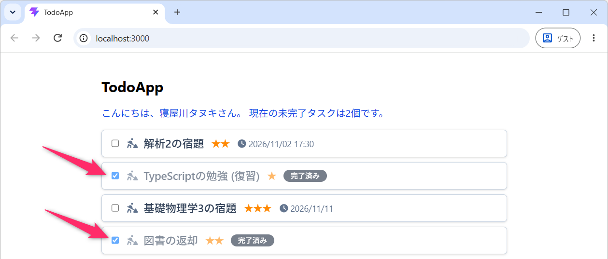
- 完成形を先に確認したい場合は、こちらの実装例を参照してください 👉 src/App.tsx、src/TodoList.tsx
10.1 map で対象の Todo を更新する
最初に、Todo の isDone
を更新する関数を用意します。src/App.tsx の App
関数内で、addNewTodo 関数のあと、return の前に、次の
updateIsDone 関数を追加してください。
const updateIsDone = (id: string, value: boolean) => {
setTodos((currentTodos) =>
currentTodos.map((todo) => {
if (todo.id === id) {
return { ...todo, isDone: value };
} else {
return todo;
}
}),
);
};第67行目 の引数 id は「更新対象の Todo の
ID」、value は「更新後の完了状態」です。value に true
を渡すと「完了」に、false を渡すと「未完了」に更新するようにしています。
ここでも、追加処理と同じように、setTodos に updater
関数を渡しています。今回は、前の配列に対して map
を適用し、次の状態となる配列をつくっています。それぞれの処理を順番に確認してみてください。
- 第69行目 の
mapで、現在の配列の Todo をひとつずつ取り出します。 - 第70行目 で ID を比較し、更新対象であれば、第71行目 で
isDoneを変更した 新しい Todo オブジェクト を返します。 - 更新対象でなければ、第73行目 で元の Todo オブジェクトをそのまま返します。
この結果、新しい配列が生成され、そのなかの 更新対象の Todo だけが新しいオブジェクト になります。第03回講義の オブジェクト配列の更新 で学んだ方法を、React の状態の更新に利用していることを確認できたでしょうか。
中級者向け
{ ...todo, isDone: value } では、deadline が参照する Date
オブジェクトまで複製しているわけではありません。今回は isDone
だけを変更するため、deadline
は元の参照をそのまま利用しています。すべてのプロパティを深くコピーする必要はありません。
React + TypeScript で、Todo の配列を useState で管理しています。次のコードの挙動を丁寧に解説してください。まったく理解できません😭
10.2 関数を Props として子コンポーネントに渡す
前回は、「親コンポーネント」である App から、「子コンポーネント」である TodoList に、Todo の配列を渡しました。今回は、これに加えて、状態を更新するための「関数」も Props として渡します。
Todo の配列を useState で管理しているのは App
ですが、チェックボックスを配置するのは TodoList となります。そこで、先ほどの
updateIsDone 関数を TodoList
に渡し、チェックボックスが操作されたときに、TodoList から App
に更新を依頼できるようにしていきます。
src/TodoList.tsx の Props
の型を、次のように変更してください。
第09行目 では、Props として受け取る updateIsDone
の型を指定しています。(id: string, value: boolean) => void
は、文字列と真偽値を引数に取り、戻り値を使わない「関数の型」です。ここでは、関数の処理そのものを記述しているわけではない点にも注意してください。
つづいて、src/App.tsx の <TodoList ... />
を、次のように変更してください。
これにより、App で定義した updateIsDone 関数を、TodoList のなかで
props.updateIsDone
として利用できるようになります。ここでも、波括弧のなかで渡しているのは
関数そのもの です。
10.3 チェックボックスから更新を依頼する
次に、src/TodoList.tsx を こちらの実装例 のように書き換えてください。今回は、チェックボックスの追加とともに、優先度を表現する星 (★～★★★)、期限、「完了済み」の表示も配置しています。先頭のインポートと表示用の関数も含めて書き換え、VSCode の Git の差分表示機能で変更箇所を確認してみてください。
そのうえで、Todo の名前とチェックボックスを表示している 第45行目 から 第59行目 に注目してください。
<label className="flex min-w-0 cursor-pointer items-center">
<input
type="checkbox"
checked={todo.isDone}
onChange={(e) => props.updateIsDone(todo.id, e.target.checked)}
className="mr-3 shrink-0 cursor-pointer"
/>
<FontAwesomeIcon
icon={faPersonDigging}
className="mr-2 shrink-0 text-slate-500"
/>
<span className="min-w-0 text-lg font-medium wrap-anywhere text-slate-700">
{todo.name}
</span>
</label>名前の入力欄では、value
を使って入力文字列と状態を対応付けました。チェックボックスでは、checked を使ってチェックの有無と状態を対応付けます。
- 第48行目 の
checked={todo.isDone}は、状態 → チェックボックス の反映です。isDoneがtrueならチェックが入り、falseならチェックが外れます。 - 第49行目 の
onChangeは、チェックボックスの操作 → 状態の更新依頼 を担当します。e.target.checkedで、操作後のチェック状態を真偽値として取得します。
onChange
に渡しているのは、(e) => props.updateIsDone(todo.id, e.target.checked)
というアロー関数です。この関数がチェックボックスの操作時に実行され、その Todo の ID
と、操作後のチェック状態 を引数として、App から受け取った関数をコールします。
ここを onChange={props.updateIsDone(todo.id, todo.isDone)}
と記述すると、レンダリング時に関数を実行し、その戻り値を onChange
に渡してしまいます。また、操作後のチェック状態も取得できていません。前半の「追加」ボタンと同じように、関数を渡すことと、関数を実行することの違いを曖昧にしないようにしてください。
また、ここでは label
の内側にチェックボックスと名前を配置しているので、Todo
の名前をクリックしてもチェックを切り替えられます。こちらも実際に確認してみてください。
優先度と期限の表示について
num2star は、優先度 1・2・3
を、それぞれ ★★★・★★・★ にする関数です。
formattedDate は、時刻が 00:00
の場合は日付だけ、それ以外は日付と時刻を表示する関数です。期限が null
の場合は、期限表示の部分をレンダリングしません。
- React において、JSX の input 要素に記述する内容として
onChange={(e) => props.updateIsDone(todo.id, e.target.checked)}とonChange={props.updateIsDone(todo.id, todo.isDone)}の違いが分かりません。何が違うのですか。究極に噛み砕いて解説してください。
10.4 動作確認
ここまで実装できたら、開発モードでアプリを動かし、未完了の Todo にチェックを入れてみてください。チェックを入れると、「完了済み」の表示が付き、未完了件数が1件減ることを確認してください。つづいてチェックを外し、未完了の状態に戻ることも確認しておいてください。
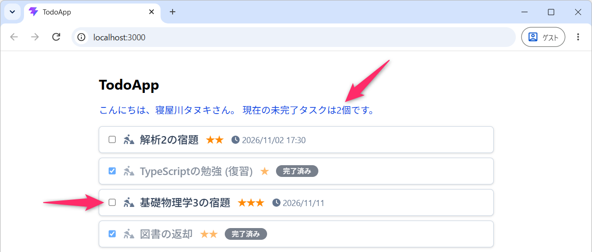
そのうえで、チェックボックスを操作してから画面が更新されるまでの流れを、追加したコードと対応させて読み解いてみてください。
- TodoList でチェックボックスを操作すると、
onChangeのイベントハンドラが実行されます。 props.updateIsDoneを通して、対象の ID と操作後のチェック状態が、App のupdateIsDone関数に渡されます。- App が
setTodosで状態を更新すると、新しい配列が Props として TodoList に渡され、チェック状態や完了表示が更新されます。App で数えている未完了件数も更新されます。
Todo の配列を状態として持っているのは、親の App コンポーネント でした。子の TodoList は、Props として受け取った関数をコールして、親に更新を依頼する役割を担当しています。このような親子間のやりとりは、React を使った開発で繰り返し登場するので、ここでしっかりと理解しておいてください。
操作した Todo 以外は影響を受けないことや、チェックを外すと未完了件数が元に戻ることも確認してください。優先度や期限を設定した Todo を新たに追加し、それらの表示と完了状態の切り替えも試しておいてください。
- ここまでの実装例 👉 src/App.tsx、src/TodoList.tsx
ここまでの変更内容をコミットしておいてください。また、念のため npm run build
を実行し、ビルドがエラーなく完了することも確認してください。
10.5 NG: 元の Todo を直接変更する
前半では、push で元の配列を直接書き換える実装の問題を確認しました。既存の Todo
を更新する場合も、元の配列や Todo
を直接書き換える処理は避ける必要があります。
以下は 参考の NG 例 です。先ほどの実装と見比べて、配列と Todo の更新方法がどのように異なるか確認してください。
const updateIsDone = (id: string, value: boolean) => {
for (const todo of todos) {
if (todo.id === id) {
todo.isDone = value;
}
}
setTodos(todos);
};この例では、todo.isDone = value で元の Todo
を直接書き換えています。さらに、setTodos(todos)
に更新前と同じ参照の配列を渡しているため、React
は状態が変わっていないと判断し、画面の更新がスキップされます。
また、配列だけをコピーしても、そのなかの元の Todo
を直接書き換えていれば、イミュータブルな更新にはなりません。先ほどの map
とスプレッド構文では、配列と更新対象の Todo
の両方を新しく生成していることを、改めて確認しておいてください。
10.5.1 定着確認
- React で Todo 配列を状態として持つ親コンポーネントがあり、子のチェックボックス操作で Todo
を更新したい。親から子に渡すものを答えよ。
- 答え: 対象のデータと、親の状態を更新するための関数。子はその関数をコールして更新を依頼する。
- React のチェックボックスの変更イベントを引数
eで受け取るとき、操作後のチェック状態を真偽値として取得する式を答えよ。- 答え:
e.target.checked。
- 答え:
- React の状態として管理している Todo 配列のうち、1件の
isDoneをmapとスプレッド構文でイミュータブルに更新する場合、新しくつくるものと、そのまま利用できるものを答えよ。- 答え: 外側の配列と、更新対象の Todo オブジェクト。対象でない Todo の参照は維持できる。
11 完了済みのタスクを削除するボタンの追加
完了済みのタスクを一括削除する機能を実装します。第03回の オブジェクト配列に対する filter で実装したコードを、ほぼそのまま利用できる内容となります。
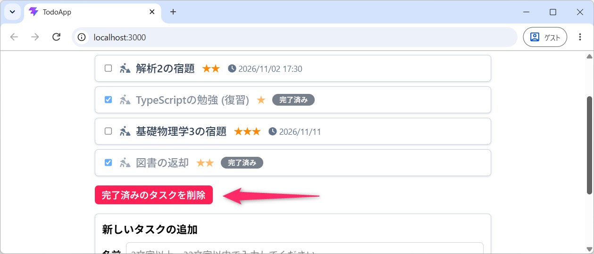
- 完成形を先に確認したい場合は、こちらの実装例を参照してください 👉 src/App.tsx、src/TodoList.tsx
まず、src/App.tsx の App 関数内に、次の
removeCompletedTodos 関数を追加してください。
const removeCompletedTodos = () => {
setTodos((currentTodos) => currentTodos.filter((todo) => !todo.isDone));
};filter の条件は「削除するもの」ではなく、新しい配列に残すもの を表します。ここでは、!todo.isDone が
true になる Todo、つまり「未完了の Todo」を残しています。
また、未完了件数を計算した行の直後に、次の行を追加してください。完了済みの件数は、全件数から未完了件数を引いて求められます。
JSX の <TodoList ... /> と <form ...>
の間に、次のボタンを追加してください。
<button
type="button"
onClick={removeCompletedTodos}
disabled={completedCount === 0}
className={twMerge(
"mt-4 cursor-pointer rounded-md px-3 py-1 font-medium",
"bg-rose-500 text-white hover:bg-rose-600",
"disabled:cursor-not-allowed disabled:opacity-50 disabled:hover:bg-rose-500",
)}
>
完了済みのタスクを削除
</button>完了済みの Todo
がない場合は、ボタンを無効化しています。このボタンはフォームの送信に使わないため、type="button"
としています。
完了・未完了が混在した状態で押下し、完了済みだけが消えることを確認してください。削除後、未完了件数は変化せず、さらに、第98行目 の設定によって 完了済みが 0 件になるとボタンが無効になること も確認してください。
ブラウザで「再読み込み」をすると、アプリが再起動し、initTodos.ts
で定義された初期データをもとに Todo
リストが再び初期化されます。データの永続化については、あとで学習します。
- ここまでの実装例 👉 src/App.tsx。
- TodoList については変更がないので、直前の完了切り替えの段階のものを使用してください。
ここまでの変更内容をコミットしておいてください。また、念のため npm run build
を実行し、ビルドがエラーなく完了することも確認してください。
12 タスクの個別削除
ここまでで、完了済みの Todo を一括で削除できるようになりました。つづいて、各 Todo に「削除」ボタンを配置し、完了・未完了に関係なく、指定した Todo を1件だけ削除できるようにしていきます。
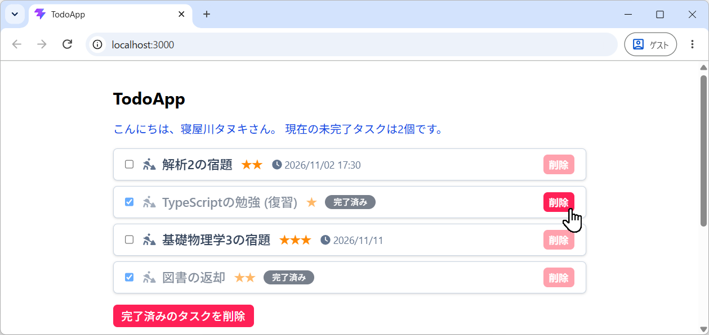
- 完成形を先に確認したい場合は、こちらの実装例を参照してください 👉 src/App.tsx、src/TodoList.tsx
12.1 filter で削除対象を除いた配列をつくる
最初に、削除対象の ID を受け取る関数を用意します。src/App.tsx の
App 関数内で、removeCompletedTodos 関数のあと、return
の前に、次の remove 関数を追加してください。
const remove = (id: string) => {
setTodos((currentTodos) => currentTodos.filter((todo) => todo.id !== id));
};第84行目 の引数 id は、削除したい Todo の ID
です。第85行目 では、setTodos に updater
関数を渡し、現在の配列に対して filter を適用しています。
filter
に渡す関数は、配列に残す要素の条件を判定する関数でした。この例では、todo.id !== id
によって次のように判定しています。
- ID が削除対象と一致する Todo では、条件が
falseになり、新しい配列に含まれません。 - ID が削除対象と異なる Todo では、条件が
trueになり、新しい配列に残ります。
この結果、削除対象を除いた新しい配列が、次の todos
になります。一括削除で使った !todo.isDone から、ID
による判定に変わっていることを確認してみてください。
filter
は、元の配列を直接書き換えることなく、条件を満たす要素を集めた新しい配列を返すメソッドでした。今回は残す
Todo の内容を変更しないので、それぞれの Todo オブジェクトは、そのまま利用しています。
- React + TypeScript で Todo アプリを開発しています。各 Todo は文字列の id を持ち、配列
todos は useState で管理しています。個別削除に
setTodos((currentTodos) => currentTodos.filter((todo) => todo.id !== id));と記述しました。変数 id は削除したい Todo の ID です。なぜ「削除したい ID と一致しない」という条件で削除できるのかが分かりません。
12.2 削除用の関数を Props として渡す
完了状態を切り替えるときと同じように、今回も、子の TodoList から親の App
に更新を依頼する仕組み を利用していきます。src/TodoList.tsx の
Props の型に、次のように remove を追加してください。
type Props = {
todos: Todo[];
updateIsDone: (id: string, value: boolean) => void;
remove: (id: string) => void; // 追加
};第10行目 の (id: string) => void は、文字列の ID
を引数に取り、戻り値を使わない関数の型です。
つづいて、src/App.tsx の <TodoList ... />
を、次のように変更してください。これにより、App で定義した remove
関数を、TodoList のなかで props.remove として利用できるようになります。
12.3 各 Todo に削除ボタンを追加する
次に、src/TodoList.tsx の todos.map(...)
のなかに、削除ボタンを追加します。各 Todo を囲む <div key={todo.id} ...>
のなかで、名前・優先度・期限などをまとめている内側の <div>
の閉じタグ </div> の直後に、次のボタンを配置してください。
配置に迷った場合は、実装例 の 第78行目 から 第90行目 と見比べてみてください。名前などの表示と削除ボタンが、左右に並ぶ構成になっています。
<button
type="button"
onClick={() => props.remove(todo.id)}
aria-label={`${todo.name}を削除`}
className={twMerge(
"shrink-0 cursor-pointer rounded-md px-2 py-1 text-sm font-bold",
"bg-rose-300 text-white hover:bg-rose-500",
)}
>
削除
</button>第81行目 では、onClick に
() => props.remove(todo.id)
というアロー関数を渡しています。この関数がクリック時に実行され、そのボタンに対応する
Todo の ID を引数として、App から受け取った remove
関数をコールします。
ここでも、onClick に渡すのは 関数そのもの
でした。onClick={props.remove(todo.id)}
と記述すると、クリックを待たず、レンダリング時に削除処理を実行してしまいます。引数を付けて呼び出したいときは、今回のようにアロー関数で包む書き方を利用してください。
また、第82行目 の aria-label には、「React
の復習を削除」のように、Todo
の名前を含む説明を設定しています。画面上は同じ「削除」という文字でも、スクリーンリーダーなどで、どの
Todo を削除するボタンかを区別できるようにするためです。
12.4 動作確認
ここまで実装できたら、開発モードでアプリを動かし、次の点を確認してください。
- 未完了の Todo の「削除」ボタンを押すと、その Todo だけが消え、未完了件数が1件減ること。
- 完了済みの Todo の「削除」ボタンを押すと、その Todo だけが消え、未完了件数は変わらないこと。
- すべての Todo を削除すると、前回つくった「現在、登録されているタスクはありません。」という表示になること。
今回も、子コンポーネントの TodoList が Props
として受け取った関数をコールし、親コンポーネントである App
が状態を更新するという流れでした。未完了件数も現在の todos
から数えているので、削除後の状態に合わせて更新されていることを確認してください。
- ここまでの実装例 👉 src/App.tsx、src/TodoList.tsx
ここまでの変更内容をコミットしておいてください。また、念のため npm run build
を実行し、ビルドがエラーなく完了することも確認してください。
12.5 演習 5分
一括削除と個別削除では、Todo を残す条件が異なります。リストに表示される内容と未完了件数に注目して、次の操作で何が変わるか実際に確認し、その理由を説明してください。
- 完了・未完了が混在する一覧で、一括削除する。
- 未完了の Todo を 1 件だけ個別削除する。
- すべての Todo を削除してから、新しい Todo を追加する。
- 確認するポイント: 一括削除では未完了件数は変わらない。未完了の個別削除では 1 件減る。空の一覧からでも追加でき、追加した 1 件が表示される。
12.5.1 定着確認
- 各 Todo が完了状態を表す
isDoneを持つ配列currentTodosから、isDoneがtrueの Todo だけを除いた配列を得る、filterを使った式を答えよ。- 答え:
currentTodos.filter((todo) => !todo.isDone)。
- 答え:
- 各 Todo が文字列の
idを持つ配列currentTodosから、Todo のidプロパティが削除対象を表す変数idと一致する Todo だけを除いた配列を得る、filterを使った式を答えよ。- 答え:
currentTodos.filter((todo) => todo.id !== id)。
- 答え:
- Todo の完了状態の変更に
map、削除にfilterを使う理由を説明せよ。- 答え:
mapは各要素を対応する要素に変換し、filterは条件を満たす要素だけを残すから。更新では件数を保ち、削除では対象を除いた配列を得たい。
- 答え:
13 リファクタリング: コンポーネントに分割
ここまでの実装では、Todo
の一覧表示から、名前・優先度・期限の表示、チェックボックス・削除ボタンの処理まで、すべてを
TodoList
コンポーネントに記述してきました。しかし、1つのコンポーネントに多くの役割を持たせると、コードが肥大化し、修正や機能追加が難しくなってしまいます。
そこで、1件分の Todo の表示と操作を TodoItem
コンポーネントとして独立させる
リファクタリングを行い、役割ごとにコードを整理していきます。
このように、外から見た動作を保ちながら、内部のコードを整理・改善することを「リファクタリング」といいます。今回は、次のようにコンポーネントの役割を分けていきます。
- TodoList: Todo の配列を受け取り、一覧に並べる。Todo がない場合のメッセージも表示する。
- TodoItem: 1件の Todo を受け取り、名前・優先度・期限や、チェックボックス・削除ボタンを表示する。
App の状態管理と、追加・更新・削除の処理は、引き続きそのまま利用していきます。
完成形を先に確認したい場合は、こちらの実装例を参照してください 👉 src/App.tsx、src/TodoList.tsx、src/TodoItem.tsx
13.1 TodoItem コンポーネントの作成
最初に、src/TodoItem.tsx を新規作成し、次のコードを記述してください。これまで src/TodoList.tsx に記述していた、1件分の Todo を表示する JSX を、このファイルに移します。
表示用の num2star・formattedDate 関数と、dayjs
やアイコンなどのインポートも、表示処理と一緒に移している点に注目してください。
import type { Todo } from "./types";
import dayjs from "dayjs";
import { FontAwesomeIcon } from "@fortawesome/react-fontawesome";
import { faClock, faPersonDigging } from "@fortawesome/free-solid-svg-icons";
import { twMerge } from "tailwind-merge";
type Props = {
todo: Todo;
updateIsDone: (id: string, value: boolean) => void;
remove: (id: string) => void;
};
const num2star = (n: number): string => "★".repeat(4 - n);
const formattedDate = (date: Date) => {
if (date.getHours() === 0 && date.getMinutes() === 0) {
return dayjs(date).format("YYYY/MM/DD");
}
return dayjs(date).format("YYYY/MM/DD HH:mm");
};
const TodoItem = (props: Props) => {
const todo = props.todo;
return (
<div className="flex items-center justify-between gap-3 rounded-md border border-slate-300 bg-white px-4 py-2 drop-shadow">
<div
className={twMerge(
"flex min-w-0 flex-wrap items-center gap-x-3 gap-y-1",
todo.isDone && "opacity-60",
)}
>
<label className="flex min-w-0 cursor-pointer items-center">
<input
type="checkbox"
checked={todo.isDone}
onChange={(e) => props.updateIsDone(todo.id, e.target.checked)}
className="mr-3 shrink-0 cursor-pointer"
/>
<FontAwesomeIcon
icon={faPersonDigging}
className="mr-2 shrink-0 text-slate-500"
/>
<span className="min-w-0 text-lg font-medium wrap-anywhere text-slate-700">
{todo.name}
</span>
</label>
<span
aria-label={`優先度: ${todo.priority}`}
className="tracking-tighter text-orange-400"
>
{num2star(todo.priority)}
</span>
{todo.deadline && (
<span className="flex items-center text-sm text-slate-500">
<FontAwesomeIcon icon={faClock} className="mr-0.5" />
{formattedDate(todo.deadline)}
</span>
)}
{todo.isDone && (
<span className="rounded-full bg-slate-800 px-3 py-0.5 text-xs font-medium text-white">
完了済み
</span>
)}
</div>
<button
type="button"
onClick={() => props.remove(todo.id)}
aria-label={`${todo.name}を削除`}
className={twMerge(
"shrink-0 cursor-pointer rounded-md px-2 py-1 text-sm font-bold",
"bg-rose-300 text-white hover:bg-rose-500",
)}
>
削除
</button>
</div>
);
};
export default TodoItem;第08行目 の todo: Todo は、このコンポーネントが
1件分の Todo オブジェクト を受け取ることを表しています。TodoList が受け取る
todos: Todo[] との違いを確認してください。第23行目
では、受け取った1件を変数 todo に得ています。
また、第09行目 と 第10行目 では、完了状態の更新と個別削除に使う関数を Props として受け取っています。これらを利用する 第37行目 と 第68行目 は、これまで TodoList に記述していた処理と同じです。
Todo の配列の状態は、引き続き App コンポーネント が管理します。TodoItem は、受け取った Todo を表示し、Props として受け取った関数を使って App に更新を依頼する役割を担当します。
13.2 TodoList コンポーネントの変更
つづいて、src/TodoList.tsx
の全体を、次のように書き換えてください。1件分の表示と表示用の関数を TodoItem
にまとめ、TodoList には「Todo がない場合の表示」と「配列を map
して並べる処理」を残すようにします。
import type { Todo } from "./types";
import TodoItem from "./TodoItem";
type Props = {
todos: Todo[];
updateIsDone: (id: string, value: boolean) => void;
remove: (id: string) => void;
};
const TodoList = (props: Props) => {
const todos = props.todos;
if (todos.length === 0) {
return (
<div className="text-red-500">
現在、登録されているタスクはありません。
</div>
);
}
return (
<div className="flex flex-col gap-2">
{todos.map((todo) => (
<TodoItem
key={todo.id}
todo={todo}
updateIsDone={props.updateIsDone}
remove={props.remove}
/>
))}
</div>
);
};
export default TodoList;ここまで実装できたら、開発モードでアプリを動かしてみてください。分割前と同じ画面が表示され、完了状態の切り替えと個別削除も、これまでどおり動作することを確認してください。そのうえで、コンポーネント間の受け渡しを読み解いていきます。
第02行目 では、新しく作成した TodoItem
をインポートしています。そして、第23行目 の map で Todo
をひとつずつ取り出し、第26行目 の todo={todo}
で、1件分のデータを TodoItem に渡しています。
この map が返す一番外側の要素は <TodoItem ... />
なので、第25行目 のように、key も TodoItem
に設定します。値には、一意で安定した Todo の id
を使います。追加や削除で表示位置が変わっても、同じ Todo を識別するためでした。
また、第27行目 と 第28行目 では、App から受け取った関数を、そのまま TodoItem に渡しています。TodoList のなかで、それらの関数を実行しているわけではない点にも注意してください。
例えば、TodoItem の「削除」ボタンを押したときの流れは、次のようになります。
- App で定義した
remove関数が、App → TodoList → TodoItem と Props を通して渡されます。 - TodoItem のボタンを押すと、
props.remove(todo.id)が呼び出され、App で定義した削除処理が実行されます。 - App が状態を更新すると、新しい配列が TodoList に渡され、その配列に含まれる Todo が TodoItem で表示されます。
コンポーネントを分けたあとも、状態を管理している App に更新を依頼するという流れが保たれていることを確認できたでしょうか。
- React + TypeScript の Todo アプリで、App が Todo 配列を useState で持ち、TodoList が配列を受け取り、TodoItem が1件を表示しています。App で定義した remove 関数は、TodoList を経由して Props として TodoItem に渡しています。TodoItem の削除ボタンからこの関数を呼び出すとき、データと処理がどのように流れるか説明してください。子の TodoItem が Todo を直接変更してはいけない理由も説明してください。
- ここまでの実装例 👉 src/App.tsx、src/TodoList.tsx、src/TodoItem.tsx
ここまでの変更内容をコミットしておいてください。また、念のため npm run build
を実行し、ビルドがエラーなく完了することも確認してください。
13.2.1 定着確認
- React で、Todo 配列を
mapし、各要素について TodoItem を返す場合、keyを設定する要素と、その値に適したものを答えよ。ただし、各 Todo は一意で安定したidを持つものとする。- 答え:
mapが直接返す TodoItem に設定し、値には安定した一意のtodo.idを使う。
- 答え:
- React の Todo アプリが App → TodoList → TodoItem という構成で、Todo
の配列を状態として持つのは App である。TodoItem
が削除を実行したい場合、どのようにするか説明せよ。
- 答え: App で定義して Props 経由で渡した削除関数を、対象の ID を引数にしてコールする。
- React + TypeScript の Todo アプリで、TodoList から1件分の表示を TodoItem に移す際、JSX
以外に、移したり新しく用意したりする必要があるものを挙げよ。
- 答え: 表示用の補助関数と、ライブラリ・アイコン・Todo 型などのインポート。TodoItem が受け取る Props の型も用意する。
14 ここまでの動作確認
ここまでで、追加・完了切り替え、一括削除、個別削除、入力検証 ができるようになりました。この段階の完成コードは、次のリンクから確認することができます。一括ダウンロードは こちら。
最後にブラウザをリロードし、追加や削除が初期状態に戻ることも確認してください。
ここまでは メモリ上の状態 を変更しているため、リロード後までデータは残りません。次のセクションでは、この問題を改善するために「データの永続化」について学んでいきます。
15 LocalStorageを利用したデータの永続化
ここまでの Todo アプリでは、追加・更新・削除をしても、ブラウザをリロードすると初期状態に戻ってしまいます。つづいて、リロードしたときや、次回アクセスしたときにも、前回の Todo リストを使えるようにしていきます。
このように、アプリを終了したあとも利用できるように、データや状態を保存することを データの永続化 (Data Persistence) といいます。
ウェブアプリでは、サーバ側のデータベースなどにデータを保存する方法も使われます。ユーザー認証と組み合わせれば、異なる端末から同じデータを利用することもできます。今回は、まだバックエンド開発を学んでいないので、ブラウザに組み込まれた LocalStorage を使って、フロントエンドで永続化を実装していきます。
- 完成形を先に確認したい場合は、こちらの実装例を参照してください 👉 src/App.tsx。
15.1 LocalStorage とは
LocalStorage は、「キー」と「値」のペアでデータを保存する機能です。Python
の dict のような仕組みですが、保存するキーと値は 文字列 になります。JavaScript
からは、window.localStorage、または単に localStorage
と記述して利用できます。
localStorage.setItem(key, value): キーを指定して、文字列を保存する。localStorage.getItem(key): キーに対応する文字列を取得する。キーがなければnullを返す。localStorage.removeItem(key): キーを指定して、保存データを削除する。
LocalStorage の内容は、ブラウザを閉じたあとも保持できます。ただし、保存領域は 端末のブラウザ (プロファイル) ごと、オリジンごとに分かれています。
たとえば、「寝屋川タヌキ」と「萱島ウサギ」が、それぞれ別の PC のブラウザで Todo アプリを使っているとします。この場合、「寝屋川タヌキ」が「高専に侵入」という Todo を追加しても、「萱島ウサギ」の Todo リストには影響しません。
保存領域とオリジンについて
オリジンとは、プロトコル・ホスト名・ポート番号の組み合わせを指します。保存容量は、1 オリジンあたり 5 MiB 程度 (約 5 MB) が目安です。
http://localhost:5173/とhttp://localhost:5174/は、ポート番号が異なるので、別の保存領域になります。https://hoge777.github.io/react-todo-app/とhttps://hoge777.github.io/portfolio/は、パスが異なっていても同じオリジンなので、保存領域を共有します。同じキーを使えば、同じ保存データを読み書きします。
このため、開発中の localhost と、公開先のウェブサイトでも、保存されているデータは別になります。
15.1.1 定着確認
- LocalStorage のキーと値に使えるデータ型を答えよ。
- 答え: 文字列。
- 同じ PC で Edge と Chrome を使用しているとき、同一オリジンに対して各ブラウザは「独立した
LocalStorage を持つ」か「共通の LocalStorage を持つ」か答えよ。
- 答え: 独立した LocalStorage を持つ。
- 画像ファイルなどのバイナリデータを、そのまま LocalStorage の値として保存できるか答えよ。
- 答え: そのままでは保存できない。Base64 などで文字列に変換すれば保存できる。
15.2 保存データを読み込む関数の用意
最初に、アプリの起動時に使う Todo
の配列を読み込む処理を用意します。src/App.tsx
のインポートのあと、getTodoNameError
関数の前に、次のコードを追加してください。
今回の例では、このアプリが保存した、正しい形式の JSON データを読み込むことを前提に進めます。
const localStorageKey = "TodoApp";
type StoredTodo = {
id: string;
name: string;
isDone: boolean;
priority: number;
deadline: string | null;
};
const loadTodos = (): Todo[] => {
const todoJsonStr = localStorage.getItem(localStorageKey);
if (todoJsonStr === null) {
return initTodos;
}
const storedTodos: StoredTodo[] = JSON.parse(todoJsonStr);
return storedTodos.map((todo) => ({
...todo,
deadline: todo.deadline === null ? null : new Date(todo.deadline),
}));
};第13行目 の localStorageKey
は、保存と読み込みに使うキーです。ここでは「TodoApp」という名前で、Todo
の配列全体を保存するようにします。
loadTodos 関数では、第24行目
で保存されている文字列を取得し、キーがない場合に限って、第26行目 で
initTodos を返しています。
キーがある場合は、第29行目 の JSON.parse で JSON
文字列を配列に戻します。JSON.stringify が「データ → JSON
文字列」への変換であるのに対し、JSON.parse は「JSON 文字列 →
データ」への変換を担当します。
すべての Todo を削除すると、保存される文字列は "[]" になります。これは
「空の Todo リストが保存されている状態」 です。キーが存在しない
null
とは区別してください。ここを同じ扱いにすると、リロードしたときに削除済みの初期データが戻ってしまいます。
また、第15行目 からの StoredTodo
の型では、deadline を string | null
としています。これまで使ってきた Todo 型の Date | null
との違いに注目してください。
Date オブジェクトは、JSON.stringify
によって文字列に変換されますが、JSON.parse だけでは Date
オブジェクトに戻りません。そのため、第32行目 の
new Date(todo.deadline) で、期限の文字列を Date
オブジェクトに戻しています。期限がない場合の null は、そのまま利用します。
15.3 状態の初期化と保存処理の追加
つづいて、src/App.tsx の 第01行目 に
useEffect を追加してください。
そして、todos を初期化している行を、次のように変更してください。
ここでは、useState に 初期値を生成する関数として
loadTodos を渡しています。React
が状態を初期化するときに、この関数の戻り値を使って、保存データから todos
を用意するようになります。
さらに、App 関数内の showNewTodoNameError
を求めている行のあと、updateNewTodoName
関数の前に、次のコードを追加してください。
第58行目 では、現在の todos を JSON.stringify で
JSON 文字列に変換し、LocalStorage に保存しています。
15.4 リロードして動作を確認する
ここまで実装できたら、開発モードでアプリを動かし、次の操作を試してみてください。
- 名前・優先度・期限を設定した Todo を追加し、ブラウザをリロードする。
- Todo の完了状態を切り替え、もう一度リロードする。
- Todo を個別に削除してから、リロードする。
- すべての Todo を削除してから、リロードする。
それぞれの操作について、リロード前の Todo リストが復元されることを確認してください。特に、すべて削除した場合は、空の一覧のままになること、期限を設定した Todo では リロード後も日付や時刻が正しく表示されることを確認しておいてください。
15.5 useEffect で保存するタイミングを制御する
保存処理で利用している useEffect は、React の状態と、ブラウザの API
などの外部の仕組みを同期させるための Hook です。今回は、todos の内容を
LocalStorage に反映させるために使っています。
第59行目 の [todos] は、依存配列
といいます。この記述によって、最初の表示後と、todos
が変わったあとの表示後に、保存処理が実行されるようになります。
前回のカウンタでも確認したように、状態が変わると、React は App
関数を再実行して画面を更新します。名前の入力欄に 1 文字入力したときにも App
関数は再実行されますが、このとき変わるのは newTodoName などで、todos
は変わりません。そのため、この保存処理は実行されません。
一方、Todo の追加・完了切り替え・削除では、新しい配列を setTodos
に渡していました。これによって todos
が変わると、保存処理が実行されます。入力欄の編集と、Todo
リスト自体の変更を区別して保存していることを確認できたでしょうか。
中級者向け
useState<Todo[]>(loadTodos)
は、状態の初期化に使う関数を渡す書き方です。useState<Todo[]>(loadTodos())
とすると、App 関数が再実行されるたびに、引数の loadTodos()
も実行されてしまいます。
また、開発環境の Strict Mode では、確認のため、初期化関数や Effect
が追加で実行されることがあります。今回の loadTodos
は読み込みと変換だけを行い、保存用の Effect は現在の配列を保存するので、追加で実行されても
Todo が増えたり、読み込む前に保存データを空にしたりする処理にはなっていません。
useEffect については、React の公式リファレンス や、初心者向け！ReactのuseEffectが何してるのか20分で説明
@ Code Tips (動画)、以下のプロンプト例などを使って理解を深めてください。
- React + TypeScript で Todo アプリを開発しています。配列 todos を useState
で管理し、
useEffect(() => { localStorage.setItem("TodoApp", JSON.stringify(todos)); }, [todos]);としています。なぜ、名前の入力欄の状態 newTodoName を更新したときには保存されず、todos を更新したときには保存されるのですか。App 関数の再実行と Effect の実行の違いが分かりません。 - React + TypeScript で、期限を Date または null で持つ Todo の配列を LocalStorage に保存しています。JSON.stringify で保存し、JSON.parse で読み込んだあと、なぜ期限を new Date で変換する必要があるのですか。TypeScript の型注釈と、実際のデータ型の関係も含めて説明してください。
15.6 ローカルストレージの管理
保存されたデータは、ウェブブラウザの デベロッパーツール
から確認・削除することができます。Chrome や Edge で F12
を押し、次の順序で確認してみてください。
- 「アプリケーション (Application)」タブを開く。
- 「ローカル ストレージ (Local storage)」を展開し、現在のアプリのオリジンを選択する。
- キー「TodoApp」に保存されている JSON 文字列を確認する。
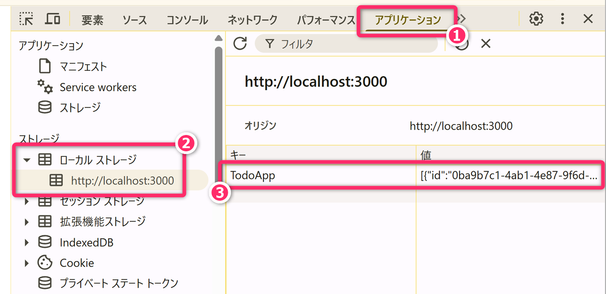
保存内容と画面上の Todo を見比べ、名前・完了状態・優先度・期限がどのように保存されているか確認してください。期限がある場合は、保存データでは文字列になっていることにも注目してください。
また、キー「TodoApp」の行を右クリックして削除し、そのあとブラウザをリロードしてみてください。保存データがないため、initTodos
から初期化されることを確認できます。最初の表示後に保存処理も実行されるので、キー「TodoApp」は初期データの内容で再作成されます。
- ここまでの実装例 👉 src/App.tsx
15.6.1 定着確認
- LocalStorage のキー「TodoApp」にデータがない場合と、文字列
"[]"が保存されている場合では、Todo アプリの初期化をどのように区別するか答えよ。- 答え: キーがない場合だけ initTodos を使い、
"[]"が保存されていれば空の配列として復元する。
- 答え: キーがない場合だけ initTodos を使い、
- LocalStorage に保存するために Todo 配列を JSON
文字列へ変換するメソッドと、その文字列をデータに戻すメソッドを、それぞれ答えよ。
- 答え:
JSON.stringifyとJSON.parse。
- 答え:
- Todo の期限を Date オブジェクトとして持つ配列を JSON.stringify で保存し、JSON.parse
で復元した。期限がある Todo の deadline は、その直後にどのデータ型になっているか答えよ。
- 答え: 文字列。Date オブジェクトに戻すには
new Date(...)が必要。
- 答え: 文字列。Date オブジェクトに戻すには
- React で
useEffect(() => { localStorage.setItem("TodoApp", JSON.stringify(todos)); }, [todos]);と記述した場合、保存処理が実行されるタイミングを答えよ。- 答え: 最初の表示後と、依存配列にある todos が変わったあとの表示後。開発環境の Strict Mode では確認のため追加で実行される場合もある。
16 Reactアプリを GitHub Pages にデプロイする手順
ここまで開発した Todo アプリを GitHub Pages にデプロイ（公開） して、自分の PC 以外からも利用できるようにしていきます。
プログラミング1 の授業のなかで HTML と CSS で作成したポートフォリオサイトとは違って、今回のプロジェクトには TypeScript や JSX のコードが含まれています。
そのため、ソースコードをそのまま GitHub
に配置するだけではなく、ビルドによって生成された HTML・CSS・JavaScript
などのファイルを公開する必要があります。前回の講義で学んだように、npm run build
を実行すると、これらのファイルが dist フォルダに生成されます。
今回は、GitHub Actions という「GitHub 上で処理を自動実行する仕組み」を利用します。最初に設定しておくと、次の流れで公開・更新できるようになります。
- 自分の PC でコードを変更・コミットし、GitHub にプッシュする。
- GitHub Actions が、GitHub 上で依存パッケージのインストールとビルドを実行する。
- ビルドで生成された dist フォルダ の内容が、GitHub Pages に公開される。
以下では、リポジトリ名を react-todo-app、公開するコードのブランチを main として G説明します (この手順は Vite の公式ドキュメント を基にしています)。
16.1 GitHub リポジトリの準備
まず、VSCode のソース管理から、現在のプロジェクトを GitHub の パブリックリポジトリ として発行してください。リポジトリ名は react-todo-app とします。既に発行済みの場合は、そのリポジトリを引き続き使用してください。
[Ctrl]+[Shift]+[P] でコマンドパレットを起動して Publish GitHub
を入力してください。
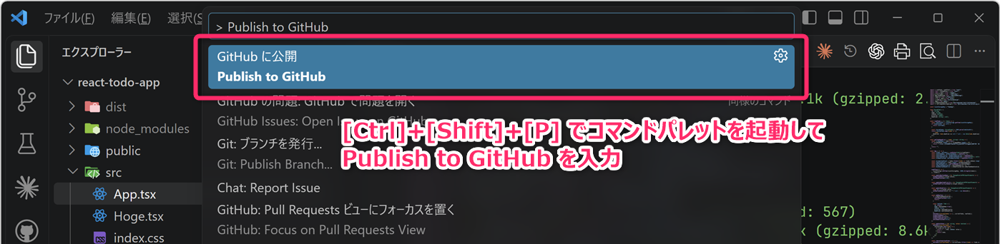
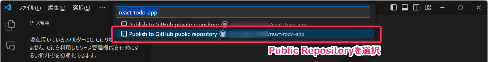
また、package.json と package-lock.json が、どちらも Git の管理対象になっていることを確認してください。GitHub Actions は、これらのファイルを使ってビルドに必要な環境を復元します。
- node_modules フォルダ と dist フォルダ は、これまでどおり .gitignore による除外対象のままで構いません。
16.2 GitHub Pages の設定
ウェブブラウザで、発行したリポジトリを開き、次のように設定してください。
- リポジトリの「Settings」タブを開き、左側の「Pages」を選択する。
- 「Build and deployment」の「Source」で「GitHub Actions」を選択する。
このあと、処理内容を記述するファイルを VSCode で作成します。この画面でワークフローのテンプレートを選択したり、ファイルを作成したりする必要はありません。
なお、以前に github-pages
環境で公開できるブランチを制限している場合は、その設定によってデプロイできないことがあります。
16.3 Vite の公開先の設定
GitHub Pages での公開先は、通常、次のような URL になります。xxxx は
自分の GitHub アカウント名 に読み替えてください。
https://xxxx.github.io/react-todo-app/このように、ドメインの直後ではなく /react-todo-app/ の下に公開する
ことに合わせて、Vite の base を設定します。これは、ビルドした JavaScript や CSS
などを、正しい URL から読み込めるようにするための設定です。
プロジェクトのルートにある vite.config.ts
を、以下のように変更してください。第 04 回の React・Tailwind
CSS・開発サーバの設定は引き継ぎ、第08行目 に base
を追加しています。
import { defineConfig } from "vite";
import react from "@vitejs/plugin-react";
import tailwindcss from "@tailwindcss/vite";
// https://vite.dev/config/
export default defineConfig({
plugins: [react(), tailwindcss()],
base: "/react-todo-app/", // ◀◀ 追加
server: {
port: 3000,
strictPort: false,
open: true,
},
});リポジトリ名が異なる場合は、base も
"/自分のリポジトリ名/" に変更してください。前後のスラッシュ
/ も含めて指定します。
また、この設定は開発中にも使われます。以降、npm run dev
で起動したときは、http://localhost:3000/react-todo-app/
のように、ターミナルに表示される URL を開いてください。
16.4 ワークフローの作成
GitHub Actions に実行してもらう処理の流れを「ワークフロー」といいます。ここでは、main ブランチにプッシュされたら、ビルドして GitHub Pages に公開する というワークフローを作成します。
VSCode で、プロジェクトのルートに .github フォルダ を作成し、そのなかに workflows フォルダ を作成してください。さらに、そのなかに deploy.yml を新規作成してください。配置は次のようになります。
react-todo-app/
├─ .github/
│ └─ workflows/
│ └─ deploy.yml
├─ src/
├─ package.json
├─ package-lock.json
└─ vite.config.ts.github/workflows/deploy.yml に、以下の内容を記述して保存してください。これは YAML という形式の設定ファイルです。字下げにも意味があるため、スペースや階層を崩さないようにしてください。
name: Deploy React app to Pages
on:
push:
branches: ["main"]
workflow_dispatch:
permissions:
contents: read
pages: write
id-token: write
concurrency:
group: "pages"
cancel-in-progress: true
jobs:
deploy:
runs-on: ubuntu-latest
environment:
name: github-pages
url: ${{ steps.deployment.outputs.page_url }}
steps:
- name: Checkout
uses: actions/checkout@v7
- name: Set up Node.js
uses: actions/setup-node@v7
with:
node-version: "24"
cache: "npm"
- name: Install dependencies
run: npm ci
- name: Build
run: npm run build
- name: Setup Pages
uses: actions/configure-pages@v6
- name: Upload artifact
uses: actions/upload-pages-artifact@v5
with:
path: "./dist"
- name: Deploy to GitHub Pages
id: deployment
uses: actions/deploy-pages@v5on では、処理を開始するきっかけを指定しています。ここでは main
ブランチへのプッシュ のほか、Actions
の画面から手動で実行することもできるようにしています。
使用しているブランチ名が main ではない場合 (たとえば master など)
は、第05行目 の branches の指定を変更してください。
steps は、実行する処理を順番に並べたものです。GitHub
上の実行環境にコードを取得し、Node.js 24 系列を用意して、npm ci と
npm run build を実行します。そのあと、dist フォルダ
を公開用のファイルとしてアップロードし、GitHub Pages にデプロイします。
permissions は、GitHub Actions がコードを読み取り、Pages
に公開するための権限です。今回の構成では、個人用アクセストークンなどを自分で作成・登録する必要はありません。
- Vite + React + TypeScript で開発したアプリを、GitHub Actions でビルドして GitHub Pages に公開します。GitHub Actions と GitHub Pages は、それぞれ何を担当するのですか。また、公開したアプリを利用する人の PC にも Node.js のインストールが必要ですか。開発・ビルド・アプリの実行を区別して説明してください。
- React アプリの GitHub Actions で、
npm ciのあとにnpm run buildを実行します。なぜ npm install ではなく npm ci を使うのですか。package.json と package-lock.json の役割、Vite や TypeScript を devDependencies に入れていてもビルド時には必要になる理由も説明してください。
16.5 コミット・プッシュと公開結果の確認
ここまでの設定ファイルを含めてすべて保存し、VSCode のターミナルで、プロジェクトのルートから次のコマンドを実行してください。
npm run buildエラーがあれば修正し、ビルドできることを確認してください。そのあと、VSCode のソース管理から「コミット」と「同期 (Push)」を実行します。vite.config.ts と .github/workflows/deploy.yml、および package-lock.json を含めて、必要なファイルをプッシュしてください。
プッシュが完了したら、ウェブブラウザでリポジトリの「Actions」タブを開いてください。「Deploy React app to Pages」という名前のワークフローが実行されます。
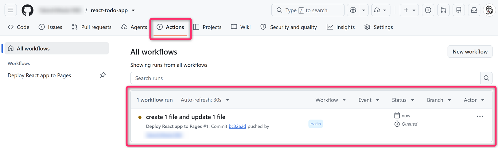
その実行結果を開き、deploy の処理が
緑色のチェックマークで成功するまで
待ってください。プッシュが成功しただけでは、公開まで成功したとは限りません。
成功したら、「Settings → Pages」に表示される公開先の URL を開いてください。今回の例では https://xxxx.github.io/react-todo-app/ です。Todo の追加・完了切り替え・削除を試し、リロードしても内容が保持されることを確認してください。
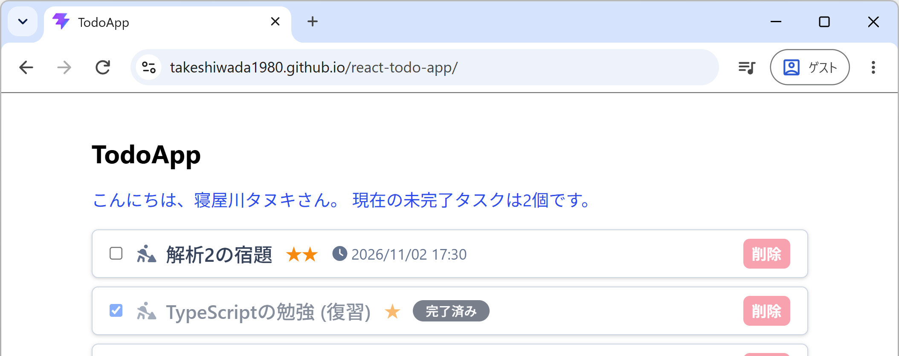
自分の PC の localhost と GitHub Pages はオリジンが異なります。LocalStorage のデータも別になるため、開発中に保存した Todo が、そのまま公開先に移るわけではありません。
16.6 アプリを更新したときの手順
初回の設定が済んだら、以降は次の流れでアプリを更新していきます。
- 自分の PC でコードを変更し、開発サーバで表示や動作を確認する。
npm run buildを実行し、ビルドできることを確認する。- 変更をコミットし、main ブランチにプッシュする。
- GitHub の「Actions」で成功を確認し、公開先を開いて変更が反映されていることを確認する。
このように、main ブランチへのプッシュをきっかけに、ビルドと公開が自動で行われます。修正をコミットしただけで、プッシュを忘れないようにしてください。
16.7 うまく公開できないとき
公開できない場合は、まず「Actions」の実行結果を開き、どの処理でエラーになったか を確認してください。
- Install dependencies で失敗する場合：package-lock.json
がプッシュされているか、package.json
と一緒に更新されているかを確認してください。パッケージを追加・変更した場合は、ローカルで
npm installを実行したあとの両ファイルをコミット・プッシュします。 - Build で失敗する場合：ログに表示される型エラーやファイル名を確認してください。GitHub 上では Linux でビルドするため、TodoList.tsx を Todolist.tsx としてインポートしているような、大文字・小文字の違いも問題になります。
- Setup Pages や Deploy to GitHub Pages で失敗する場合：「Settings → Pages」の Source が GitHub Actions になっているか、ワークフローを記述し間違えていないかを確認してください。
- 処理は成功したのに画面が表示されない場合：開いている URL
と、vite.config.ts の
baseがリポジトリ名に合っているかを確認してください。F12でデベロッパーツールを開くと、JavaScript や CSS の読み込みエラーなども確認できます。
原因が分からない場合は、試したこととエラーメッセージを整理して、生成 AI や周囲の詳しい学生、教員に相談してください。
16.7.1 定着確認
- React アプリのソースコードをコミットしたが、GitHub にプッシュしていない。main
ブランチへのプッシュで公開するワークフローによって、公開先は更新されるか答えよ。
- 答え: 更新されない。main ブランチにプッシュする必要がある。
- Vite で開発した React アプリを
https://xxxx.github.io/my-todo/に公開する場合、baseに指定する文字列を答えよ。- 答え:
"/my-todo/"。
- 答え:
- GitHub Actions で
npm ciを使って環境を復元するために、package.json とともに Git で管理するファイル名を答えよ。- 答え: package-lock.json。
- GitHub へのプッシュが成功したあと、React
アプリの公開まで成功したことを確認するには、何を確認するか答えよ。
- 答え: Actions でワークフローの成功を確認し、公開先の URL でアプリの表示・動作を確認する。
16.8 おまけ：URL に応じた画面切り替え（ルーティング）
皆さんが普段利用している Web アプリには、「一覧画面」「詳細画面」「設定画面」のように、複数の画面を切り替えられるものがあります。また、画面を切り替えると URL も変わり、その URL を開くと目的の画面を直接表示できるものもあります。
このように、URL に応じて表示する画面を切り替える仕組みを「ルーティング」
といいます。React でも、React
Router というライブラリなどを使って実装できます。React Router には、通常の URL
のパスを使う BrowserRouter や、URL の # 以降を使う
HashRouter があります。
ただし、BrowserRouter を使うアプリを GitHub Pages
に公開すると、アプリ内では画面を移動できても、移動先の URL
を直接開いたり、リロードしたりすると「404」になることがあります。例えば、/react-todo-app/settings
という URL に対応するファイルは、GitHub Pages 上にはないためです。
GitHub Pages で公開する場合は、HashRouter
を使い、/react-todo-app/#/settings のような URL
にすることで、この問題を回避できます。なお、JavaScript や CSS を読み込むための Vite の
base 設定は、引き続き必要です。
今回の Todo アプリは、ルーティングを使わず、1 つの画面のなかで操作が完結するように作成しました。画面切り替えにも挑戦したい人 は、以下のプロンプト例を利用して、ルーティングの仕組みや GitHub Pages で起こる問題、その解決方法について探究してみてください。
- React + TypeScript で、1 つの画面だけを持つ Todo アプリを作りました。ここに「Todo 一覧」と「アプリの説明」の 2 画面を用意したいです。そもそもルーティングとは何ですか。useState で表示内容を切り替える方法と、URL を使う方法には、どのような違いがありますか。ブラウザの戻る・進むや、URL を人に送る場合も含めて説明してください。
- React Router の BrowserRouter と HashRouter は、どのように URL を扱うのですか。GitHub
Pages の
https://xxxx.github.io/react-todo-app/に公開する場合を例に、2 つの方式を比較してください。xxxx は GitHub のアカウント名です。 - React Router の BrowserRouter を使ったアプリを GitHub Pages
に公開しました。アプリ内のリンクから settings
画面には移動できますが、
https://xxxx.github.io/react-todo-app/settingsを直接開いたり、その画面でリロードしたりすると 404 になります。なぜ操作によって結果が違うのですか。ブラウザ内の処理と、サーバに送られるリクエストを分けて説明してください。 https://xxxx.github.io/react-todo-app/#/settingsという URL を開くとき、サーバにはどの部分が送られますか。#以降の部分を HashRouter がどのように使うのか、なぜ GitHub Pages の 404 問題を回避できるのかを説明してください。Chrome のデベロッパーツールでリクエストを確認する方法も知りたいです。- Vite の開発サーバでは BrowserRouter の画面をリロードできるのに、GitHub Pages では 404
になるのはなぜですか。
npm run previewで確認できることと、実際に GitHub Pages に公開して確認する必要があることを区別して説明してください。 - React + TypeScript + Vite のアプリを GitHub Pages の
/react-todo-app/に公開し、HashRouter で/react-todo-app/#/settingsのような URL を使います。Vite のbaseと React Router のbasenameは、それぞれ何のための設定ですか。この構成では、HashRouter にもリポジトリ名の basename を設定する必要がありますか。 - React Router の HashRouter
を使って画面を切り替えたいです。
<a href="/settings">と<Link to="/settings">は、移動先の URL やページの読み込み方がどう違いますか。なぜアプリ内の画面切り替えでは Link を使うのか、短い例で説明してください。 - React + TypeScript + Vite で Todo アプリを作り、GitHub Pages で公開しています。HashRouter を使って「Todo 一覧」と「アプリの説明」の 2 画面を作るための、最小限の構成を教えてください。既存のプロジェクトに React Router を追加する前提とし、HashRouter・Routes・Route・Link の役割と、変更するファイルを説明してください。コードを提示したあと、私が仕組みを理解できたか確認する質問もしてください。
- HashRouter を使う React アプリを GitHub Pages に公開しました。画面内のリンク、URL
の直接入力、リロード、戻る・進むを確認するには、どのような手順で試せばよいですか。また、
#/settingsと#/存在しない画面の両方を開いたとき、GitHub Pages と React Router のどちらが表示を担当するかも説明してください。
17 課題1
以上で、(フロントエンドだけで処理が完結するような) React を使った Todoアプリ の「チュートリアル」は完了です。
このチュートリアルで学んだことをベースとして オリジナルのTodoアプリ を開発して、GitHub Pages にデプロイし、その URL を提出してください。ゼロから構築しても、チュートリアルのなかで開発したものを改良する形でも OK です。
この課題で大切なのは、どれだけ高度な機能を実装したかではなく、どれだけ理解し、自分の力にできたかです。生成AIの活用は構いませんが、理解しないまま複雑な機能を追加しても、十分な学びにはつながりません。自分で仕組みを理解し、その内容を説明できることを大切にしてください。
- 提出期限 : 11月19日 (木) 18時
- 上記の期日以降に採点します。
- 課題の採点後は、修正版の再提出・追提出があっても原則として再評価はしません (＝採点がフィードバックされるまでは内容を更新して問題ありません)。
- 採点 : GitHubリポジトリの README の内容を「10点満点」、アプリ本体やソースコードを「10点満点」で、合計20点満点 で評価します。15点 を標準とします。
- 提出先 : Teamsの「PG3-課題1」に GitHub
リポジトリの URL を提出
README.mdの先頭付近に「Todoアプリをホストしている GitHub Pages の URL」 を記載してください。未記載は4点減。README.mdの末尾付近に「開発期間: 2026.10.xx ~ 2026.11.xx (約XXX時間)」のような内容を必ず記載してください。未記載は4点減。
Teams に提出する URL は「Todo アプリをホストしている GitHub Pages の
URL」ではなく「GitHub リポジトリの URL」です。一般に
https://github.com/xxxx/yyyy.git のようになるはずです。
提出 URL のミスは 6点減とします。
- 取り組み時間の目安 : 16時間以上
(前回と今回の講義内容の取り組み時間を含む)。本科目は「学修単位科目」かつ「筆記試験がない科目」です。課題には十分な時間をかけて取り組んでください。
- 結局、プログラミング系では、課題に取り組んでいる時間 (＝アウトプットに費やす時間) が成長につながります。
- アドバイス : Todoアプリとしての「機能
(独自性)」や「UI/UX
(レスポンシブ対応)」を中心とした完成度の他、リポジトリの
README.mdの内容を評価します (最低、5枚以上のスクリーンショットを添えてください)。次のような内容を含めるようにしてください。- アプリの機能やコンセプト。これを記載しておかないと「頑張って実装した機能に気付いてもらえないこと」があります。スクリーンショットなどがあると分かりやすいです。
- 特に挑戦・工夫したところ、オリジナリティを持たせているところ。それらの「着想」や「背景・経緯」についても書かれていると (就活のポートフォリオとして) 高評価です。また、汎用性を追求したアプリよりも、自身の体験や環境に基づき、ニッチなニーズを満たしたり、困りごとを解決するアプリの方が圧倒的に高く評価されます。
- 「授業の課題だから仕方なしに作業的に作成した感」が透けて見えると低評価・悪印象です。README に「課題1」のような文言は記載しないことをお勧めします。
- 使用技術 (技術スタック、主要ライブラリ)、開発に要した時間や期間など。
README.mdに Markdown のレンダリングミス（例：**強調文字** がそのまま表示されるなど）が残っている場合は、大きく減点とします。成果物を自分の目で確認し、問題があれば修正することは、開発者としての基本的な責任です。
- アプリの機能やコンセプト。これを記載しておかないと「頑張って実装した機能に気付いてもらえないこと」があります。スクリーンショットなどがあると分かりやすいです。
提出された課題 (URL) は、知能情報コースの学生 (知能情報コースを志望する1年生を含む)、本校教員に共有します。また、この課題は、インターンシップや就職の選考にポートフォリオとして使えるもの (=自分のスキルや経験を証明するもの) となるので、力を入れて取り組んで欲しいと考えています。
- IT系の就活を意識したポートフォリオでは、「汎用性を追求したアプリよりも、自身の体験や環境に基づくニッチなニーズを満たすアプリの方が圧倒的に受けが良い」と言われました。どういうことですか。